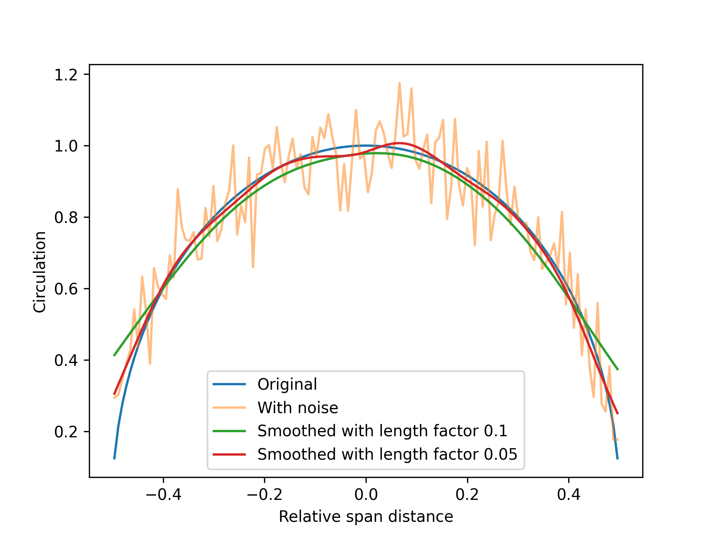
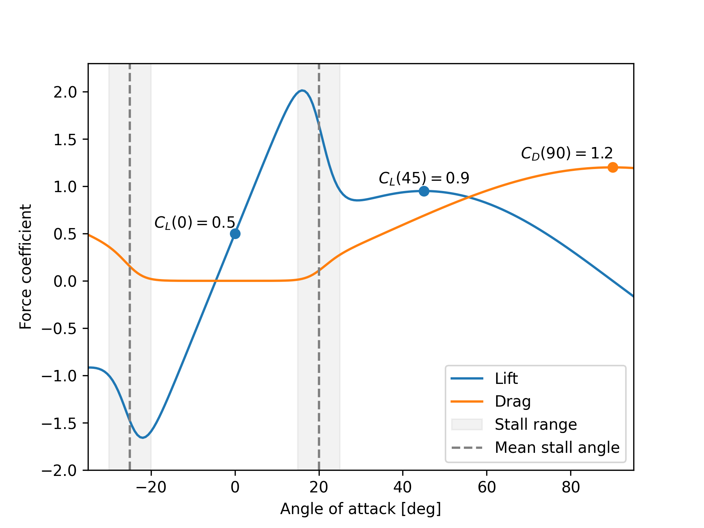

Introduction
Welcome to the Stormbird book!
Stormbird is a library for simulating lifting surfaces, e.g., wings, in a simplified way by representing them as line-models. Although this can be used for a variety of different cases, it is mostly developed to offer efficient modeling of modern wind propulsion devices. That is, the following types of lifting surfaces are of particular interest:
- Wing sails
- Rotor sails
- Suction sails
- Kites
To achieve practical modeling capabilities for these use cases, the following physical effects are assumed to be particularly important:
- Various lift generation mechanisms: modern sails have sections that range from classical foils, with and without flaps, rotating cylinders, and foils with boundary layer suction.
- Strong viscous effects: For all lift generating mechanisms above, there will be high lift coefficients with strong viscous effects on both the lift and drag forces. For instance, wing sails tend to be operated close to stall, the lift on a rotating cylinder is strongly affected by partial flow separation, and the lift on a suction sail is very dependent on the amount of boundary layer suction.
- Interaction effects between lifting surfaces: Many wind-powered ships have several sails placed in close proximity. Interaction effects between multiple sails can therefore be important.
- Interaction effects with other structures: Independent of the number of sails, there can be interaction effects between the sails and the rest of the ship, such as structures on deck or the part of the hull that is above the water line.
- Unsteady effects: Ship applications often require modeling of unsteady effects, for instance, to model seakeeping behavior or maneuvering. The sail forces are assumed to be important for such cases, which also introduces dynamic effects on the sails. In addition, kites are often flown dynamically to increase the power extracted from the wind.
At the same time, it is also often necessary that the computations are fast. The user will usually be interested in testing many different weather conditions, ship speeds, sail configurations, and operational variables. The goal is, therefore, to find the right balance between accuracy and speed for the intended use case. To achieve this, the library supports the following methods, that offer different levels of complexity and computational speed:
- Discrete static lifting line, for steady- or quasi-steady cases
- Discrete dynamic lifting line, for unsteady or steady cases with large wake deformations
- Actuator line, for steady and unsteady cases where interaction with other structures is of interest
The library is developed as part of the research project KSP WIND by the Department of Marine Technology at the Norwegian University of Science and Technology. The main developer is Jarle Vinje Kramer.
Who the Book is for
You should read this if you are interested in using Stormbird to run lifting line or actuator line simulations, or if you just want more information on the theory behind each method. The book is intended to introduce the theory, available models, and overall concepts in the implementation. In other words, the goal is to give a bird's-eye view of the library and its functionality. When appropriate, other literature will be referenced for more details. That is, it is written primarily for users, and are therefore not focused directly on the underlying source code. However, there will often be examples from the source code when that is the easiest way to illustrate functionality. For instance, data structures will often be shown directly source code to illustrate what fields and settings that are available.
Don't forget to also look at the code!
The text in this book will not cover everything! It may also, at times, be outdated relative to the latest version of the library. The only way to get a full insight into the inner workings is, therefore, to look at the source code itself and the examples of how to use the code. Below is some relevant links for this purpose
- The Stormbird GitHub page can be found here. It contains the core library, utility functionality, interfaces and examples.
- More specifically, examples of how to use the Python interface of the code can be found here.
- Automated code documentation can be found here for the core Stormbird library and here for the Stormath library, which contains mathematical utility functionality written for Stormbird.
Overview of different versions
Stormbird itself is a Rust library. The Rust programming language was chosen as it combines high computational speed with a modern user-friendly developer experience. One potential way to set up a Stormbird simulation is, therefore, to make a custom Rust executable. However, for those that don't know Rust, or just want to use the library in a high-level setting, it is also possible to use one of the high-level interfaces to the core functionality, listed below:
- The Python interface, implemented in the
pystormbirdmodule. This interface is a direct API to the necessary Rust functions and data structures for running lifting line simulations. This allows for scripting the setup and execution of simulations using Python. More information about the interface will often be mentioned throughout the rest of the book, as well as a high-level description that can be found here. - The Functional Mockup Interface, implemented in the
StormbirdLiftingLineFMU. This interface is more restricted in what it can do, relative to the Python interface, but serves as a practical way to execute sail simulations together with other FMU-models representing the ship. More information about the FMU-interface can be found here - The OpenFOAM interface for running actuator line simulations with OpenFOAM as the CFD solver. This interface is yet to be described in this book. To come.
General about input and output
Stormbird, as any library, consist of many data structures. Some represents the settings for a simulations, such as wake and solver parameters, while others represent input to or result from a simulation. To create and run a simulation it is generally necessary to pass information to the library about the data structures that you whish to create. This is the case for all the interfaces.
To facilitate simple serialization and deserialization - at least from a coding perspective - Stormbird relies heavily on the Serde library. This is "[..] a framework for serializing and deserializing Rust data structures efficiently and generically". In other words, it is a library to automate the conversion of data structures to and from different file formats. Serde supports many formats, but JSON has been chosen for Stormbird. This means that any input must be passed as JSON strings, and output will often also be delivered as JSON strings.
Working with Stormbird is therefor often a matter of setting up the right input in a JSON format and then reading and parsing the output from the resulting JSON format.
Throughout this book there will be examples of data structures shown as Rust code. This is generally to show the available fields in a structure, to give an impression of which variables it is possible to set. All of these Rust-structures has a corresponding JSON representation. A simple example of how a generic Rust structure is converted to a JSON string from Serde is shown below.
An example of a Rust struct first:
#![allow(unused)] fn main() { pub struct SpatialVector { pub x: f64, pub y: f64, pub z: f64, } }
Then the corresponding JSON version with the input data
{
"x": 1.0,
"y": 0.0,
"z": 1.2
}
An example of a complete input string to Stormbird can be seen below. More explanations about this input will come later:
{
"line_force_model": {
"wing_builders": [
{
"section_points": [
{"x": 125.0, "y": 0.0, "z":-20.0},
{"x": 125.0, "y": 0.0, "z":-60.0}
],
"chord_vectors": [
{"x": -8.0, "y": 0.0, "z": 0.0},
{"x": -8.0, "y": 0.0, "z": 0.0}
],
"section_model": {
"Foil": {}
}
},
{
"section_points": [
{"x": 45.0, "y": 0.0, "z": -20.0},
{"x": 45.0, "y": 0.0, "z": -60.0}
],
"chord_vectors": [
{"x": -8.0, "y": 0.0, "z": 0.0},
{"x": -8.0, "y": 0.0, "z": 0.0}
],
"section_model": {
"Foil": {}
}
}
],
"nr_sections": 10
},
"simulation_mode": {
"Dynamic": {
"wake": {
"ratio_of_wake_affected_by_induced_velocities": 0.25
},
"solver": {
"damping_factor": 0.2,
"max_iterations_per_time_step": 3
}
}
},
"write_wake_data_to_file": true,
"wake_files_folder_path": "output/wake_files"
}
Default values
Default values are often given for structures representing settings or models. This means that it may not be necessary to specify every field in a structure in the input. For instance, in the example above, the "wake" structure only has one specified variable. However, the complete wake structure has 12 fields, where some are other structures with more sub fields. The reason only the "ratio_of_wake_affected_by_induced_velocities" is given above is that this was the only setting where a different value than the default was wanted.
The goal is to implement reasonable default values on as many variables as possible.
Helper library to create the right JSON settings
Much of the setup of Stormbird models can be done using a Python library called stormbird_setup. This library is implemented independent of of the core library, and should be useful for all interfaces. It makes different settings available as Python classes that inherits from the Pydantic BaseModel. This makes serializing of the data structures straight forward, and the setup of the models come with typed check validation. That is, the only purpose of the library is to ease the generation of the right JSON strings, and can therefore be used no matter how stormbird is executed, and in combinations with manually generated strings if that is needed. The library also implements some high-level shortcut-functionality for generating typical simulation settings for different cases. See the package folder on GitHub or the examples in the pyfoamsetup folder for more on how to use stormbird_setup
Python interface
The Python interface to Stormbird is made using a Rust library called PyO3. As a general principle, there is a one-to-one relationship between the functionality available in Python and Rust equivalent functionality. That is, names are kept identical in both languages, and the programming constructs are kept as similar as possible (e.g, data structures in Rust becomes classes in Python, etc.)
Examples of how to use the Python functionality can be found in the pystormbird examples folder at the Stormbird github page
Installation
To build and install the package, it is necessary to have a Rust compiler installed on your system as well as Python. With this in place, in should be as easy as a normal pip installation.
For instance, you can navigate to the pystormbird folder in a terminal and execute
pip install .
Still a lot of JSON input and output
Only a limited set of the Rust library has a direct Python interface. For instance, data structures that primarily contains input, and which are therefore not needed directly in a high-level interfaces (such as builder structures) do not have a direct implementation in pystormbird. It is generally seen as uncesseary as the same settings can be passed as JSON strings, which are then deserialized into the right structures on the Rust side. Avoiding a direct Python implementation drastically reduces the development overhead when, for instance, something changes in the core library.
As such, even when using the Python interface to Stormbird, the task is often to create and pass in the right formatted JSON strings to, for instance, initializer methods to create new objects. This is, however, fairly simple as Python has excellent support for converting dictionaries into JSON strings. In addition, the stormbird_setup library can ease the creating of JSON strings in most situations.
An example of how this works is shown below, where a multi-element foil model for a Stormbird simulation is created from input data that is set up as Python dictionaries, which are then converted to a JSON string:
import numpy as np
import json
from pystormbird.section_models import VaryingFoil
# Parameters for the model, representing the foil forces at different lap angles
flap_angles = np.radians([0, 5, 10, 15])
cl_zero_angle = np.array([0.0, 0.3454, 0.7450, 1.0352])
mean_stall_angle = np.radians([20.0, 19.0 , 17.8, 16.5])
cd_zero_angle = np.array([0.0101, 0.0154, 0.0328, 0.0542])
cd_second_order_factor = np.array([0.6, 0.9, 1.2, 1.5])
# Loop over the parameters to create individual foil models
foils_data = []
for i_flap in range(len(flap_angles)):
foils_data.append(
{
"cl_zero_angle": cl_zero_angle[i_flap],
"cd_zero_angle": cd_zero_angle[i_flap],
"cd_second_order_factor": cd_second_order_factor[i_flap],
"mean_stall_angle": mean_stall_angle[i_flap]
}
)
# Collect the foil models into a "varying foil" model
foil_dict = {}
foil_dict["internal_state_data"] = flap_angles.tolist()
foil_dict["foils_data"] = foils_data
# Generate a JSON input string
input_str = json.dumps(foil_dict)
# Pass it to the Stormbird library
foil_model = VaryingFoil(input_string)
The same example with the stormbird_setup library would look like this:
import numpy as np
from pystormbird.section_models import VaryingFoil
# General structures for storing the right variables in a class
from stormbird_setup.direct_setup.section_models import Foil
# Change the name of the VaryingFoil class from stormbird_setup to avoid name clash
from stormbird_setup.direct_setup.section_models import VaryingFoil as VaryingFoilSetup
# Parameters for the model, representing the foil forces at different lap angles
flap_angles = np.radians([0, 5, 10, 15])
cl_zero_angle = np.array([0.0, 0.3454, 0.7450, 1.0352])
mean_stall_angle = np.radians([20.0, 19.0 , 17.8, 16.5])
cd_zero_angle = np.array([0.0101, 0.0154, 0.0328, 0.0542])
cd_second_order_factor = np.array([0.6, 0.9, 1.2, 1.5])
# Loop over the parameters to create individual foil models
foils_data = []
for i_flap in range(len(flap_angles)):
foils_data.append(
Foil(
cl_zero_angle: cl_zero_angle[i_flap],
cd_zero_angl: cd_zero_angle[i_flap],
cd_second_order_factor: cd_second_order_factor[i_flap],
mean_stall_angle: mean_stall_angle[i_flap]
)
)
# Collect the foil models into a "varying foil" model
varying_foil_setup = VaryingFoilSetup(
internal_state_data = flap_angles.tolist(),
foils_data = foils_data
)
# Pass it to the Stormbird library
foil_model = VaryingFoil(varying_foil_setup.to_json_string())
Functional Mockup Unit
The lifting line functionality in Stormbird is available as a Functional Mockup Unit, which means that the functionality can be executed through the Functional Mockup Interface standard. The actual interface is generated using the fmu_from_struct library, which is made by the same developer as Stormbird.
How to execute simulations using the FMU-version
The FMU-version is currently made to support version 2 of the FMI-standard. This choice is made because the developers of Stormbird primarily uses the Open Simulation Platform for executing simulations, which currently only supports version 2. An FMU that supports version 3 of the FMI-standard is relatively straight forward to make, but will probably not be prioritized before the Open Simulation Platform is updated to the latest version.
A simulation can be executed with any simulation platform that supports the FMI-standard. One example is the command line interface from the Open Simulation Platform, or some Python interface to FMU's such as FMPy or PyFMI.
To actually set up a simulation, it is necessary to pass in several parameter- and input variables to the FMU unit. For a full overview of the available variables, see the FMU source code. To see how it can be used in practice, see the FMU example folder.
What can the FMU-version do?
The FMI-interface inherently comes with more limitations than a conventional API, such as the Python interface. For instance, there are limitations on what type of variables that can be passed to and from different FMUs, and there is a specific order to how functions are executed. Although there are many ways to work around these limitations, the FMU-version of Stormbird is, for simplicity sake, designed to only cover the most typical use cases for running dynamic lifting line simulations. That is, it is not intended to be a direct alternative to the Python interface, but rather a specialized way to use some of the functionality.
To be more specific, there are essentially two primary use cases for the Stormbird FMU:
- Coupling of Stormbird to a time-domain ship simulator, such as VeSim. VeSim is a ship simulator that includes maneuvering and seakeeping models of ships. It can, for instance, simulate a ship moving in waves, including the effect of rudder action and control systems. The software is built around the FMI-standard to couple different sub-models together. Stormbird can, therefore, be one of many models in a ship-system simulations in the time-domain.
- Running sail simulations in hybrid experiments. Hybrid experiments are experiments where part of the physics is measured experimentally, while other parts are simulated. In the specific case of wind-powered ships, the aerodynamic forces on the sails are simulated while the hydrodynamics are tested in a towing tank. This article explains more of how this is done at SINTEF Ocean. The Stormbird FMU was designed to fit well with the laboratory software used at SINTEF Ocean when doing hybrid tests, called HLCC.
There are no direct coupling to VeSim or HLCC in the Stormbird FMU, but the choice of input and output variables was made, in part, based on what makes sense for these external software packages. That is, the design of the Stormbird FMU interface is not made in isolation.
OpenFOAM version
OpenFOAM is a general open source CFD solver, widely used both in academia and in industry.
The OpenFOAM version of Stormbird is currently the only way to run actuator line simulations. It consist of a volume force interface between the Stormbird library and the OpenFOAM library, that can be activated together with a solver in OpenFOAM. More details about this interface can be found both in the actuator line chapter and the specific chapter about the OpenFOAM interface.
As a general not, this interface could also serve as an inspiration for how to connect Stormbird to other CFD solvers, if this turns out to be relevant in the future.
Line model representation of wings
The fundamental building block of all the methods in Stormbird is a simplified line representation of the lifting surfaces. This means that the full geometry of the wings is reduced to multiple discrete line elements. Each line element represents a section of a lifting surface that has the following properties:
- A line segment geometry, represented as a start point and and end point, defining the location and orientation of the element. The line segment also has control point, defined to be in the middle of the line segment. This point is used when computing local flow properties for the element during a simulation.
- A chord vector, which defines both the orientation and length of the chord. The orientation is relevant for computing the angle of attack as a function of the local velocity, while the length is relevant for computing the magnitude of the forces.
- A sectional model which is used to compute lift- and drag coefficients as a function of the local flow properties. The line model itself makes no assumptions about how the lift and drag is computed. However, Stormbird comes with a limited set of sectional models that are further described in Sectional models. Note: in the actual implementation, the section model is not actually stored for each line element, because most of the time, many elements will share the same sectional model. However, when iterating over line elements in the code there is a functionality to retrieve the relevant sectional model for that line element.
Structure overview
A view of source code that defines a line force model data structure can be seen below to illustrate what data is available. There are also multiple methods connected to this data structure not shown here. The construction of a line force model is generally not done manually, but rather by a builder.
#![allow(unused)] fn main() { pub struct LineForceModel { pub span_lines_local: Vec<SpanLine>, pub chord_vectors_local_not_rotated: Vec<SpatialVector>, pub chord_lengths: Vec<f64>, pub section_models: Vec<SectionModel>, pub wing_indices: Vec<Range<usize>>, pub non_zero_circulation_at_ends: Vec<[bool; 2]>, pub density: f64, pub circulation_correction: CirculationCorrection, pub angle_of_attack_correction: AngleOfAttackCorrection, pub output_coordinate_system: CoordinateSystem, pub rigid_body_motion: RigidBodyMotion, pub local_wing_angles: Vec<f64>, pub chord_vectors_local: Vec<SpatialVector>, pub chord_vectors_global: Vec<SpatialVector>, pub chord_vectors_global_at_span_points: Vec<SpatialVector>, pub span_lines_global: Vec<SpanLine>, pub span_points_global: Vec<SpatialVector>, pub ctrl_points_global: Vec<SpatialVector>, pub ctrl_point_spanwise_distance: Vec<f64>, pub ctrl_point_spanwise_distance_non_dimensional: Vec<f64>, pub ctrl_point_spanwise_distance_circulation_model: Vec<f64>, pub input_power_models: Vec<InputPowerModel>, } }
More details on each field can be found in the code documentation. The construction of a line force model is generally not done with the structure directly, but rather through a builder
Building a line model
As shown in the intro section, a line model consist of many line elements. To simplify the construction of this line model, Stormbird uses a line force model builder that helps with at least two things:
- Reduce the amount of input data: Rather than having to specify data directly for each line element, it is possible to only specify data at some chosen points along the span - such as the beginning and the end - and let the builder interpolate for every line segment between the specified points
- Automate the setup of multiple wings: The line force model requires information about which line element belongs to which wing. This can be cumbersome to set up manually, and it is not really necessary to do so. The builder automatically keep tracks of which line element belong to which wing.
Input data
The Rust definition of the builder structure looks like the following:
#![allow(unused)] fn main() { pub struct LineForceModelBuilder { pub wing_builders: Vec<WingBuilder>, pub nr_sections: usize, pub density: f64, pub circulation_correction: CirculationCorrectionBuilder, pub output_coordinate_system: CoordinateSystem, pub local_wing_angles: Vec<f64>, pub rotation: SpatialVector, pub translation: SpatialVector, } }
The only required input is the vector containing WingBuilder structures and the nr_sections 1. The nr sections should be tested for each project, and will affect both the accuracy and the computational speed. Typical values range between 10-50. The density is set to the standard air density for 15 degrees Celsius by default ( which = 1.225 kg / m^3).
The circulation_corrections is an enum, where the default variant is None, and therefore not used by default. There will be more on the circulation corrections option later. This is only used in special circumstances, for instance when a pure lifting line simulation might fail due to numerical issues.
The output_coordinate_system is an enum that specifies how the forces and moments from the line force model should be calculated. The default is Global, which means all values are in a global coordinate system. That is, the coordinate system for the forces are not moved even if the wings are moved during a simulation. The other option is to set it to Body. In this case, the coordinate system of the forces will always follow the wings when they are moved.
The local_wing_angles, rotation, and translation specifies the initial values for the local rotation of the wing angles as well as the global rotation and translation of the whole line force model. See the move line models chapter for more.
Wing builder
A wing builder contain data to build line segments for a single wing. When a vector (or list) of wing builders are provided, the LineForceModelBuilder will automatically keep track of which line segment belong to each wing. The fields in a WingBuilder structure is as shown as Rust code below:
#![allow(unused)] fn main() { pub struct WingBuilder { pub section_points: Vec<SpatialVector<3>>, pub chord_vectors: Vec<SpatialVector<3>>, pub section_model: SectionModel, pub non_zero_circulation_at_ends: [bool; 2], pub nr_sections: Option<usize>, } }
The input consist of a set of section_points which contain information about the span line position. The minimum number of section points is two, and the first has to start at one end of the wing, while the last must end up at the other. There can, however, also be more section points in between the ends.
For each section point, there also needs to be chord_vectors, which specify the local chord at the points. The chord_vectors give information about both chord length and orientation.
Each wing also needs a sectional model. The sectional model can differ between different wings given to the LineForceModelBuilder, which is useful for cases where different sail types are installed on the same ship (uncommon today, but might happen in the future).
The non_zero_circulation_at_ends is boolean values that specifies the expected behavior of the circulation distribution at the ends of the wing. It is used when initializing the circulation distribution before a simulation, and when applying corrections to the circulation distribution. In most cases, the expected value of the circulation strength at the ends is zero, and the value of this variable should be [false, false]. However, if, for instance, the wing is standing directly on a symmetry plane, or is directly coupled to another wing, the circulation distribution will typically not be zero. If an end is coupled to something that might give a non-zero circulation, then that end should then get a true value. For instance, if the first end is standing on a symmetry plane, the value of this variable should be [true, false].
The nr_sections variable is optional but can be set for each wing to override the default parameters in the LineForceModelBuilder. Typically, it will not be used, as the most common scenario is to have the same number of sections for each wing.
When building a line force model from a wing builder, the wings are divided into multiple line segments based on the data in the WingBuilder structure. Each point in between the specified points are linearly interpolated 2
Input to methods
In many cases, the methods in Stormbird will handle the actual building of the line force models automatically, using a builder structure as input. That is, the input to some function is often the builder and not the line force model itself. For instance, when setting up a lifting line simulation in Python, you only have to supply the builder data, and the line force model will be built automatically internally.
However, it is also possible to convert a builder into a line force model. This happens by calling the build() method, as usual for Rust builder structures.
-
The number of sections for set in the
LineForceModelBuilderis used as default, except when another value is defined in theWingBuilderbelow. ↩ -
The interpolation method is possible to change or update to something that can handle non-linear changes between section points. This is, however, so far not prioritized as most sail types tend to use fairly simple geometrical structures. This might change in the future if there is a need to do so. ↩
Circulation strength
The circulation strength along a wing determines both the magnitude of the lift-forces and the induced velocities from the wing. The velocity is affected either through induced velocities from a wake model based on potential theory, in the case of lifting line simulations, or through body forces projected into a CFD domain, in the case of actuator line simulations.
This chapter specifies how the circulation strength is estimated from the local velocity on each line section, and how it is possible to modify the estimation for stability purposes. The procedure is the same for all simulation methods in Stormbird. That is, there are no differences in this regard between the static lifting line, dynamic lifting line or the actuator line. The responsibility for calculating the values are therefore given to the line force model.
Raw lifting line theory estimation
The calculation of the circulation strength on each line element follows the Kutta–Joukowski theorem. The mathematical definition of the circulation value, \( \Gamma \), on a line element is as follows, where \(U \) is the velocity, and \( L \) is the lift per unit span.
\[ \Gamma = L / (U \rho) \]
The lift per unit span is further computed from the sectional lift coefficient, \(C_L\) as follows, where \(\rho\) is the density and \(c \) the chord length:
\[ L = 0.5 \cdot \rho \cdot c \cdot C_L \cdot U^2 \]
When these equations are combined, we get the following equation for the circulation strength:
\[ \Gamma = 0.5 \cdot c \cdot C_L \cdot U \]
The actual source code looks like the following (the negative values are to account for directional definitions)
#![allow(unused)] fn main() { pub fn circulation_strength_raw(&self, velocity: &[Vec3]) -> Vec<f64> { let cl = self.lift_coefficients(&velocity); (0..velocity.len()).map(|index| { -0.5 * self.chord_vectors_local[index].length() * velocity[index].length() * cl[index] }).collect() } }
Optional corrections
Sometimes, there might be noise in the estimated circulation strength, which might cause instabilities and errors in the estimated forces. A typical examples is lifting line simulations of stalled wings - especially when the lift coefficient is very large.
To handle such cases in a practical manner, there are optional corrections methods that can be used when estimating the circulation strength. These methods are controlled through a CirculationCorrection enum that is specified for the line force model. To set up different types of corrections, a CirculationCorrectionBuilder is used, which has the following structure:
#![allow(unused)] fn main() { pub enum CirculationCorrectionBuilder { None, Prescribed(PrescribedCirculation), Smoothing(CirculationSmoothingBuilder), } }
The default variant is None, which means that no corrections are applied. The effect of the other variants are explained below.
Smoothing
The smoothing correction applies different types of smoothing filters to the estimated circulation, controlled through the following structure:
#![allow(unused)] fn main() { pub struct CirculationSmoothingBuilder { pub smoothing_type: SmoothingTypeBuilder, pub prescribed_to_subtract_before_smoothing: Option<PrescribedCirculation>, } }
The option to add a prescribed_to_subtract_before_smoothing is currently. It subtracts a prescribed circulation distribution (see more about this below) from the estimated circulation before applying the smoothing filter. After the smoothing is applied, the prescribed distribution is added back to the smoothed result. The idea behind this is that it can avoid issues with smoothing the rapidly changing circulation at the wing tips. By subtracting a known distribution first, the smoothing filter only needs to handle the more noisy part of the circulation distribution. However, the this feature is still experimental, and should be used with care.
The smoothing_type field specifies which type of smoothing filter should be applied. The available options are shown below:
#![allow(unused)] fn main() { pub enum SmoothingTypeBuilder { Gaussian(GaussianSmoothingBuilder), CubicPolynomial(CubicPolynomialSmoothingBuilder), } }
The first smoothing type is Gaussian smoothing filter. The available fields are shown below:
#![allow(unused)] fn main() { pub struct GaussianSmoothingBuilder { pub smoothing_length_factor: f64, pub number_of_end_points_to_interpolate: usize } }
The smoothing_length_factor gives a factor used to calculated the smoothing length from the span of each wing in the line force model. That is, if the value is set to 0.01, the smoothing length will be 1% of the total span of each wing, independent of the value of the wing span or the number of sections.
The number_of_end_points_to_interpolate field specifies how many points at each end of the wing that should be inserted beyond the tips of the wings before applying the smoothing. Which values that are inserted beyond the tips are dependent on wether the circulation is expected to be zero or not, controller by the non_zero_circulation_at_ends field in the line force model. If the circulation is expected to have zero circulation, the additional points are set to zero. If not, the values are linearly extrapolated from the inner points. If this value is not set, the default will be to calculate the number of insertion points based on the smoothing length and the number of sections. This should be sufficient in most cases.
An example of how this smoothing method affects the circulation distribution is illustrated in the figure below. Note: the example is with an excessive amount of noise, and is not representative of actual numerical noise from a lifting line simulation. Rather, it shows an example where an artificial elliptic circulation distribution was first generated, and then modified by adding random numerical noise. The plot then shows how the noise is reduced when the noisy circulation distribution is corrected using the Gaussian smoothing filer, with different values for the gaussian_length_factor.

As can bee seen, simple Gaussian smoothing introduces some errors towards the end of the wings if the smoothing length is too large, although the random noise is effectively reduced. It is therefore generally recommended to only apply as little smoothing as necessary to stabilize a solution.
The second smoothing type is a cubic polynomial smoothing filter, which assumes that a cubic polynomial can be fitted to the points with a certain window_size. The larger the window size, the more smoothing is applied. The available fields are shown below:
#![allow(unused)] fn main() { pub enum WindowSize { Five, Seven, Nine } pub struct CubicPolynomialSmoothingBuilder { pub window_size: WindowSize, } }
Prescribed distribution
Predetermined circulation distributions are a special mode where the circulation is forces to always follow a simple mathematical shape. For instance, it is possible to force the distribution to always be elliptical. This gives very stable simulations, and sometimes results that are very close a full simulation. It is particular useful if the goal is only to estimate interaction effects between wings, but where the lift and drag for a single wing is already known from, for instance, experimental or CFD results.
A view of the PrescribedCirculation structure:
#![allow(unused)] fn main() { pub struct PrescribedCirculationShape { pub inner_power: Float, pub outer_power: Float, } pub struct PrescribedCirculation { pub shape: PrescribedCirculationShape, pub curve_fit_shape_parameters: bool, } }
The option to curve_fit_shape_parameters is currently experimental. It will curve fit the shape parameters to the raw circulation distribution before applying the prescribed shape. However, it currently ends up with a relatively slow simulation, and the final results are not always better than just using default values for the shape parameters. It is set to false by default, and tuning it on should be used with care and testing.
The PrescribedCirculationShape parameters in the structure is used to force the circulation to always follow a mathematical shape that looks like the equation below, where \(s\) is the local non-dimensional span distance, varying from -0.5 to 0.5 along each wing:
\[ \Gamma(s) = \Gamma_0 (1.0 - (2 s)^{\text{inner_power}})^{\text{outer_power}} \]
The default values are to set inner_power to 2.0 and outer_power to 0.5. This corresponds to an elliptic distributions.
Move and modify a line model
In dynamic simulations, it will often be interesting to apply motion to the sails and dynamically change the angle of attack or internal state of a section model. This can, for instance, be done to simulate how the sails affect the seakeeping or maneuvering abilities of a ship or to allow the operational variables of the sails be dependent on the current wind conditions. This chapter specifies how to apply motion data to the sails during a dynamic simulation and how to modify the operational variables for each sail.
Motion variables
The motion of a line force model is specified by the rigid_body_motion field, which is of the RigidBodyMotion type. This structure looks like the following:
#![allow(unused)] fn main() { pub struct RigidBodyMotion { pub translation: SpatialVector, pub rotation: SpatialVector, pub velocity_linear: SpatialVector, pub velocity_angular: SpatialVector, pub rotation_type: RotationType, } }
It specifiies translation and rotation, both in terms of the curren positions and in terms of the velocities at any given time. The position is important both for updating the wake shape and for determining local wind conditions on each line segment. When applying the motion variables, the rotation will be applied first, then the translation. That is, the rotation happens around a local coordinate system always. The order of the rotation can be set with the rotation_type field, but the default is rotation in x first, then y, and then z.
The motion velocities, velocity_linear and velocity_angular, are important for the calcualtion of forces. The forces on the each line segment is primarily dependent on the local velocity, local angle of attack, and the internal state of the sectional models. As such, when a motion is applied to the line force model, it is necessary to calculate the felt velocity and felt acceleration of each line segment, so that this can further be used as input to the force calculation functions. This can be calculated from the gloabl rotation and translation velocity vectors using methods in the RigidBodyMotion structure. As will be further highlighted later, the forces are estimated from a SectionalForceInput structure, which have fields as shown in the code block below. The velocity and acceleration values calculated in the SectionalForceInput structure are dependent on the motion of the sails.
#![allow(unused)] fn main() { pub struct SectionalForcesInput { pub circulation_strength: Vec<f64>, pub velocity: Vec<SpatialVector>, pub angles_of_attack: Vec<f64>, pub acceleration: Vec<SpatialVector>, pub rotation_velocity: SpatialVector, pub coordinate_system: CoordinateSystem, } }
Each element in the vectors in the SectionalForceInput corresponds to a line element in the LineForceModel. Both the velocity and the acceleration is a combination of freestream conditions, induced velocities, and motion velocities. The motion velocities can either be automatically calcualted based on fintie difference and the time history of the motion or set manually if the variables are available from some other sources (e.g., a rigid body solver of a ship)
Control variables
Two types of control variables exist for the sails in a LineForceModel.
The first is the local_wing_angles, which defines the rotation of the sails around its local axis. The local axis is defined as the axis of the first span line. If the sails is defined to be oriented in the z-direction as the span direction, a local wing angle value will then rotate all chord vectors around the z-axis.
The second value is the internal state of the section model for each wing. This value can represent different things, depending on the sail type and how it is modeled. Typical values are flap angles, rotational speeds, and suction rates.
Updating the LineForceModel
When setting new values for either the motion variables or the control variables it is important to do it in way that also updates all dependent internal variables. For instance, many of the variables that define the geometry of the wings are defined both with their local values and their global values (e.g., chord_vectors_local and chord_vectors_global). In general, the global version of a variable type is calcualted from the local one, with the motion and wing angles applied to them. As such, updating the line force model should be done with set methods that also updates the global representation of the line force model.
The line force model have a general update function that should update all global geometry variables, and which should also be called after all set methods.
Motions
Motion can be set in two ways: either with the position and rotation only, and using finite difference to calculate the corresponding velocities due to this motion, or by updating the velocity values manually. The first option is generally the easiest. However, the latter might be useful in cases where motion velocity is available from an external source, such as a rigid body solver that integrates the acceleration of an entire ship.
Below is some examples of how to apply different motion variables through the Python interface.
import numpy as np
from pystormbird.lifting_line import Simulation
# ----- code to set up the simulation first, which includes the line force model -----
simulation = Simulation(setup_string)
translation = [1.0, 2.0, 3.0]
rotation = np.radians([10.0, 0.0, 0.0]).tolist()
time_step = 0.1
# Update the translation and rotation with the velocity set by finite difference
simulation.set_translation_and_rotation_with_finite_difference_for_the_velocity(
time_step = time_step,
translation = translation,
rotation = rotation
)
# Alternativluy, update everything manually
simulation.set_translation_only(translation)
simulation.set_rotation_only(rotation)
linear_velocity = [8.0, 0.0, 0.0]
angular_velocity = np.radians([0.0, 10.0, 0.0]).tolist()
simulation.set_velocity_linear(linear_velocity)
simulation.set_velocity_angular(angular_velocity)
Local chord angle control
Updating the chord angles in the Python interface is done by set-method that takes a list of angles as input, that must have a length equal to the number of wings in the line force model. An example code snippet is shown below, for a case with three sails:
import numpy as np
# some code to set up the simulation, as above
simulation.set_local_wing_angles(
np.radians([40.0, 35.0, 30.0]).tolist()
)
Update the internal state
The internal state of the section models can be updated with a set method, similar to how the local wing angles can be updated. This is shown in the code example below:
import numpy as np
# some code to set up the simulation, as above
simulation.set_section_models_internal_state(
np.radians([10, 12.5, 15]).tolist()
)
Force calculations
An important job for the line force model is to compute forces on each line element, as a function of the local flow variables. The results from these calculations are available in the result-structures from a simulation. A view of the result structure is shown as Rust code below. There is also a Python interface to this structure where the same fields are available.
#![allow(unused)] fn main() { pub struct SimulationResult { pub ctrl_points: Vec<SpatialVector<3>>, pub force_input: SectionalForcesInput, pub sectional_forces: SectionalForces, pub integrated_forces: Vec<IntegratedValues>, pub integrated_moments: Vec<IntegratedValues>, pub iterations: usize, pub residual: f64, } }
Sectional vs integrated
The forces on a line force model is specified both as sectional values and as integrated values. As the name suggest, the sectional forces are forces acting on each individual section in the line force model. That is, the force acting on a single line element. The integrated forces and moments are the sum of sectional forces for each wing in the line force model. That is, the length of the integrated forces and moments vectors will be equal to the number of wings.
Force types
There are four different force types in Stormbird, which are estimated from different methods. Each force type has a dedicated section below
1 - Circulation forces
The first, and usually most important, force component is the force that arise from the circulation on each line segment. The circulation strength is estimated directly from the local velocity and sectional model, as described here. The direction of the force is always normal to the local velocity.
The resulting force from the circulation strength is therefore just the "lift" on each line segment, but in the coordinate system of the local flow. Due to the presence of induced velocities, the sectional lift may cause both lift and drag relative to the incoming free stream. Circulation forces are, in other words, the combination of lift and lift-induced drag from the simulation.
2 - Sectional drag
Sectional drag is, usually1, the viscous drag on each line segment. It is calculated directly from the drag function in the sectional model. The direction is always parallel to the local flow.
3 - Added mass
Added mass forces are the forces that are proportional to the acceleration of the foil section. The magnitude of the force is determined by the added mass coefficients set in the sectional model and the acceleration. The foil-models only result in added mass forces due to acceleration in the direction normal to the chord vectors. For the rotating cylinder, the added
Note: for now, the default value of the added mass coefficient is set to zero. This is because the feature is currently lacking a proper test case. Must therefore be used with care!
4 - Gyroscopic
The gyroscopic force/moment is only applicable to rotor sails. It is the gyroscopic precision due to the rotation of the cylinders. It is dependent on the 2D moment of inertia, which needs to be specified for the sectional model in order to make this force non-zero.
Force results structures
To allow for a comparison between the force types - for instance in debugging situations - each force type is stored separately, in addition to the total force / moment. The structures used to store this data is shown below:
#![allow(unused)] fn main() { pub struct SectionalForces { pub circulatory: Vec<SpatialVector<3>>, pub sectional_drag: Vec<SpatialVector<3>>, pub added_mass: Vec<SpatialVector<3>>, pub gyroscopic: Vec<SpatialVector<3>>, pub total: Vec<SpatialVector<3>>, } }
#![allow(unused)] fn main() { pub struct IntegratedValues { pub circulatory: SpatialVector<3>, pub sectional_drag: SpatialVector<3>, pub added_mass: SpatialVector<3>, pub gyroscopic: SpatialVector<3>, pub total: SpatialVector<3>, } }
-
It is perfectly fine to include more than the viscous drag in the sectional drag model, if, for instance, it is necessary to add some empirical corrections to the total drag estimate. What exactly the sectional drag represents from a purely physical point of view must be decided on when setting up the model by the user. ↩
Input power
Some sail types, like rotor sail and suction sails require input power to operate. This is modeled entirely empirically in Stormbird. The structure that controls these models are shown below.
MORE TO COME ON THIS LATER
#![allow(unused)] fn main() { pub struct InputPowerData { pub section_models_internal_state_data: Vec<Float>, pub input_power_coefficient_data: Vec<Float>, } pub enum InputPowerModel { NoPower, FromInternalStateAlone(InputPowerData), FromInternalStateAndVelocity(InputPowerData), } }
Section models
The primary purpose of the sectional models is to compute non-dimensional lift and drag as a function of the local flow velocity at each each line element. That is, they are two-dimensional models which is used together with the chord vector and local flow velocity to compute the total force on each line section. In both lifting line and actuator line simulations, three-dimensional effects are modeled by altering the effective velocity experienced by these two-dimensional models.
Different sectional models are necessary for different sail types. This is handled by implementing the sectional model as an enum, with a definition as shown below:
#![allow(unused)] fn main() { pub enum SectionModel { Foil(Foil), VaryingFoil(VaryingFoil), RotatingCylinder(RotatingCylinder), } }
Each variant in this enum has its own sub-chapter for more details. A short overview is given below:
Foilrepresents a model for a single element foil profile, and is suitable for modelling single element wing sailsVaryingFoilis a model that extends theFoilmodel to allow the output to be dependent on some internal variable. The internal variable can for instance be a flap angle, for a two-element foil, a combination of multiple element configurations, for instance to model a three-element foil, or suction rate when modelling a suction sail.RotatingCylinderrepresent a cylinder where the rotational speed can be varied to alter the force output. This is intended to be used to model rotor sails.
More sectional models can be added in the future. The only requirement is that each model must be able to compute the necessary force coefficients. However, the goal is to cover most use cases with these three core models. Since the models are handled through an enum, they may require different inputs in their own functions for calculating lift and drag. For instance, the Foil and VaryingFoil models require the angle of attack as input, while the RotatingCylinder takes the velocity magnitude and local chord length (or diameter) as input. The right input is managed by the line force model structure, and is not something the user needs to think about when running a simulation.
To get an overview of how to set up the different variants, see the sub-chapters for each model.
Foil model
The Foil structure is a parametric model of a single element foil section. That is, it is defined using (relatively) few parameters that are later used in a simple mathematical model to compute lift and drag for arbitrary angles of attack.
Why a parametric model?
Other implementations of lifting line and actuator line methods often use data based models for computing the lift and drag coefficients. That is, the user must supply data on how the lift and drag varies as a function of the angle attack, and then the solver can use this data together with interpolation or table look-up to compute force coefficients for arbitrary angles.
A data based approach is often fine, and does have some benefits. For instance, it is the only way to make a truly general model where the user have full control over the behavior of the sectional model. For this reason, there might be implementations of pure data based models in Stormbird in the future. However, the choice of using a parametric model for now where based on three reasons.
First, it becomes easier to use a parametric model as a building block for more complex foil models, where the behavior depends on some internal state, such as flap angle or suction rate. This is because the model parameters can be allowed to depend on the internal state through interpolation. See the varying foil sub chapter for more on this.
Second, a parametric model ensures smoothness, which is beneficial when using the model together with gradient based optimization algorithms. For instance, such a method might be used to optimize the angle of attack for wing sails at a given wind direction. The smoothness is in particular practical when the expected optimal point is close to the stall angle - which it often is.
Third, tuning a parametric models is generally believed to be easier than a data based model. For instance, lets say you want to adjust the exact stall characteristics of a 2D model, to make a simplified lifting line model better fit with high-fidelity experimental data; this would not be straightforward with a data based model, but should be fairly easy if the parametric model of the lift has good parameters to control the stall behavior.
The downside of a parametric model is believed to be small, as long as the model can represent typical foil section behavior without too many simplifications. The design of the Foil model is intended to achieve this as best as possible1.
Model overview
The model is divided in two core sub-models, labeled pre-stall and post-stall, respectively representing the behavior before and after the foil has stalled due to too high angle of attack.
For angles of attack below stall, it is assumed that both lift and drag can be represented accurately with simple polynomials. The lift is linear by default, but can also have an optional high-order term where both the factor and power of the term is adjustable. The high order term is meant to capture slowly developing separations, which might occur at low Reynolds numbers. The drag is assumed to be represented as a second order polynomial. For a wing sail operating below stall, the drag will mostly be dominated by lift-induced drag forces. The viscous drag can therefore be kept simple, as the importance to the total force is relatively low.
For angles of attack above stall, both the lift and drag are assumed to be harmonic functions which primarily is adjusted by setting the max value after stall. This is a rough model which might not be perfect for all angles of attack, but is assumed to be close enough. A rough and approximate model for the post-stall behavior is assumed to be OK as wing sails and suction sails will most often operate below stall.
The transit between the two models is done using a sigmoid function, where both the transition point and the width of the transition can be adjusted.
In addition, there factors in the model to account for added mass and lift due to the time derivative of the angle of attack. Both these effects are assumed to be linear for simplicity.
Available parameters
A view of the available fields in the Foil model is seen below, with further explanation of each parameter right after:
#![allow(unused)] fn main() { pub struct Foil { pub cl_zero_angle: f64, pub cl_initial_slope: f64, pub cl_high_order_factor: f64, pub cl_high_order_power: f64, pub cl_max_after_stall: f64, pub cd_min: f64, pub angle_cd_min: f64, pub cd_second_order_factor: f64, pub cd_max_after_stall: f64, pub cd_power_after_stall: f64, pub cdi_correction_factor: f64, pub mean_positive_stall_angle: f64,. pub mean_negative_stall_angle: f64, pub stall_range: f64, pub cd_bump_during_stall: f64, pub cd_stall_angle_offset: f64, pub added_mass_factor: f64, } }
An explanation of the parameters are given below:
cl_zero_angle: Lift coefficient at zero angle of attack. This is zero by default, but can be set to a non-zero value to account for camber, flap angle or boundary layer suction/blowing.cl_initial_slope: How fast the lift coefficient increases with angle of attack, when the angle of attack is small. The default value is \( 2 \pi \) , which should always be the values used for a normal foil profile - with or without camber and flap - but it can also be set to different value for instance to account for boundary layer suction/blowing.cl_high_order_factor: Optional proportionality factor for adding higher order terms to the lift. Is zero by default, and therefore not used. Can be used to adjust the behavior of the lift curve close to stall.cl_high_order_power: Option power for adding higher order terms to the lift. Is zero by default, and therefore not used. Can be used to adjust the behavior of the lift curve close to stall.cl_max_after_stall: The maximum lift coefficient after stall.cd_min: Minimum drag coefficient when the angle of attack is equal to theangle_cd_min.angle_cd_min: The angle where the the minimum drag coefficient is reached.cd_second_order_factor: Factor to give the drag coefficient a second order term. This is zero by default.cd_max_after_stall: The maximum drag coefficient after stall.cd_power_after_stall: Power factor for the harmonic dependency of the drag coefficient after stall. Set to 1.6 by default.cdi_correction_factor: factor that can be used to correct for numerical errors in the lift-induced drag. Set to a positive value to increase the drag, and a negative value to decrease the drag. The default is zero, which means no correction.mean_positive_stall_angle: The mean stall angle for positive angles of attack, which is the mean angle where the model transitions from pre-stall to post-stall behavior. The default value is 20 degrees.mean_negative_stall_angle: The mean stall angle for negative angles of attack, which is the mean angle where the model transitions from pre-stall to post-stall behavior. The default value is 20 degrees.stall_range: The range of the stall transition. The default value is 6 degrees.cd_bump_during_stall: Factor to model additional drag when the foil is stalling, but that is not included in the pre- and post-stall drag models. Set to zero by default.cd_stall_angle_offset: Optional offset to the stall angle for the drag coefficient. This can be used to tune the drag curve to better fit experimental data. The default is zero, which means that stall effects on the drag starts at the same angle of attack as for the lift. When the offset is set to any value, the "amount of stall" function is shifted by this value for the case of the drag coefficient only.added_mass_factor: Factor to model added mass due to accelerating flow around the foil. Set to zero by default.
Example
An example of the output of a foil model is shown below. The parameters values are given as follows:
#![allow(unused)] fn main() { let foil = Foil { cl_zero_angle = 0.5, cl_max_after_stall = 0.9, cd_max_after_stall = 1.2, mean_positive_stall_angle = 20.0_f64.to_radians(), mean_negative_stall_angle = 25.0_f64.to_radians(), stall_range = 10.0_f64.to_radians(), ..Default::default() } }

-
The design of the
Foilmodel is open for changes, and may be updated when a need is discovered. The goal is to find the right balance between simplicity and flexibility. ↩
Varying foil model
The VaryingFoil structure is a model of a foil where the output can be allowed to depend on some internal state. The typical example is a flap angle, for a two-element foil, or suction rate, for a suction sail. To achieve this, the varying foil model uses multiple Foil models, each belonging to a specific internal value. Linear interpolation is used for all Foil model parameters for each state between the input data. This interpolation is handled by the VaryingFoil structure whenever a new internal state is set.
How to setup a VaryingFoil structure
As a general case, you need to tune several Foil models for multiple values of whatever you want to use as an internal state of the wing. If this is a flap angle, you would need data for the lift and drag coefficients as a function of angles of attack for multiple discrete flap angles. When a unique model is generated for each value of the flap angle, this can be given as input to the VaryingFoil structure, along with the flap angle data as internal_state_data. An example will come...
What if I want to model a three-element foil?
More complex models with more internal variable might be added in the future. This will be done when the use case represent itself, and likely not before. However, it is still possible to use the VaryingFoil structure to model sails with more control parameters in a slightly simplified way.
For instance, lets assume you want to model a three-element foil, where there is both a flap and a leading edge slot. Currently it is not possible to model changing values of the slot- and flap-angle independently directly in Stormbird. However, if you assume some relationship between the flap angle and the slot angle, the VariableFoil structure can still be used.
This might not be such a large simplification for practical use cases1. The point of a multi-element foil is both to create larger maximum lift forces and to reduce the drag force for a given lift force. In a lifting line model - and also mostly for wings in general - the lift-induced velocities are not very affected by how the lift is created. Rather, it is just the value of the lift-coefficient that matters. For a given wanted lift coefficient it seems reasonable that there is always a single optimum combination of flap- and slot-angle, which probably can be computed independently of three-dimensional effects. As such, reducing the model to a single internal variable might not be a big problem.
Available parameters
The available parameters in the structure is shown below.
#![allow(unused)] fn main() { pub struct VaryingFoil { pub internal_state_data: Vec<f64>, pub foils_data: Vec<Foil>, pub current_internal_state: f64, } }
-
This is currently a hypothesis which we hope to be able to explore more in the future... ↩
Rotating cylinder
Model representing a rotating cylinder, where the main intended use case is to model rotor sails. The purpose is to calculate lift, drag on a two-dimensional cylinder as a function of how fast the cylinder is spinning.
The primary input variable to the model is the spin ratio, which is defined as the ratio of the velocity of the rotor to the wind velocity. The velocity of the rotor is defined as the circumference times the rotations per seconds.
Unlike the foil model, the rotating cylinder model is entirely data based and not parametric. There are primary two reasons for this:
- The behavior of lift and drag on a spinning cylinder is, in some ways, simpler than a foil section. The lift will generally increase with increasing spin-ratios, and not experience stall in the same way as a foil. In addition, the two-dimensional drag is generally going from a high value at zero spin-ratio to a very low value at normal operating spin-ratios. A few data points are therefore often enough to capture the behavior of a rotating cylinder.
- It is not common, at least not yet, to combine a rotating cylinder with other control mechanism. For instance, for wing sails and suction sails it is common to control the sails with both a flap angle or suction rate, and the angle of attack. A rotor sail is only controlled through its rotational speed. A simple one dimensional data model is therefore assumed to be sufficient for rotor sails (lift and drag as function of spin ratio only)
Available parameters
The parameters in the rotating cylinder are listed below.
The cl_data, cd_data and spin_ratio_data is the most important parts of the model. They specify how lift and drag is dependent on the spin ratio. All variables have default variables based on the results in the article "Calculation of Flettner rotor forces using lifting line and CFD methods". See also the validation data section for more on this.
The added_mass_factor and moment_of_inertia parameters can be used to estimate added mass forces and gyroscopic forces on the rotor. Note: more to come on these parameters later. They need further validation, and are therefore set to zero by default.
The spin ratio for each section is calculated based on the revolutions_per_second value and the local chord length and velocity. Then, the lift and drag in 2D is interpolated from the input data values.
#![allow(unused)] fn main() { pub struct RotatingCylinder { pub revolutions_per_second: f64, pub spin_ratio_data: Vec<f64>, pub cl_data: Vec<f64>, pub cd_data: Vec<f64>, pub added_mass_factor: f64, pub moment_of_inertia_2d: f64, } }
Lifting line simulations
The basics of the lifting line simulations in Stormbird have a lot in common with the classical approaches made by Lanchester (1907) and Prandtl (1918) more than 100 years ago, and which are also often taught in many introduction courses for fluid dynamics and lifting surfaces (e.g., the text books in the literature chapters). That is, the overall concept and equations is the same. The wing geometry is reduced to vortex lines along the span, the lift and circulation on the line elements are estimated from the local velocity and angle of attack based on a two-dimensional sectional model, and the lift-induced velocities due to the estimated circulation is calculated based on a potential theory wake model.
However, the Stormbird implementation also differs from the classical lifting line approach in at least three broad-stroke ways, explained further in the subsections below
Non-linear solver
In the classical lifting line method, the circulation is found by solving a simplified linearized equation system. The system is based on the assumptions that the lift-induced velocities are small and that there is a linear relationship between the lift and vertical induced velocities on the wing. As a consequence, only a single equations system must be solved for each free stream condition, which makes the solution fast and simple.
The big problem with this type of solver in the context of wind propulsion devices is that the final solution does not include viscous effects on the lift. Viscous effects are, for instance, important when wing sails or suction sails are operated close to stall. In addition, the assumption about small lift-induced velocities may not be correct for high-lift wind propulsion types, such as rotor- and suction sails.
Stormbird solves for the circulation strength in ways that attempt to capture the viscous effects in physical correct ways. That is, a stalled wing section affect both the forces and the lift-induced velocities from the wing. At the moment, there are two solvers. The first is based on the original linearized equations system, but with a post-solver empirical correction to account for viscose effects on each section. The second is a based on and iterative non-linear solver, which is mathematically more correct when the lift-induced velocities becomes large. However, with the right tuning of the model, both solvers can generally find a good solution.
More details is given in the solver chapter
Arbitrary shaped wings
The classical methods assumes that both the wing and the wake is completely flat, and that the potential theory vortex wake extends indefinitely far downstream of the wing. These are necessary assumptions to develop an analytical equation system. However, they are not necessary when solving the equations numerically.
As already explained in the line model chapter, simulation models are built up of several discrete line elements. This makes it possible to have arbitrary shaped wings, and have multiple wings together in the same simulations. To make this possible in a lifting line simulation, it is necessary with some way to calculate induced velocities from a line element. This is done by assuming that each line line element is a constant strength vortex line.
Such vortex lines are also often used in panel methods or vortex lattice methods to represent doublet panels. The exact formulation for the induced velocity as a function of line geometry and strength are taken from the VSAERO theory document
Unsteady simulations and dynamic wakes
The final extension from the classical lifting line approach is the inclusion of dynamic wakes and unsteady modeling. This means that the wings can move during a simulation, and the velocity input can change as a function of time.
Unsteady simulations comes in two flavors: 1) quasi-steady and 2) dynamic. In the quasi-steady case, the wake is as it is in a conventional lifting line simulation: It consist of horseshoe vortices that extend far downstream from the span lines of each wing for every time step. However, unsteady behavior is still modeled by changes in the felt velocity at the line elements due to the motion of the wings or changes in the freestream input.
In the dynamic case, the wake modeled is extended to consist of many doublet panels, similar to how it would be in an unsteady panel- or vortex lattice method. Both the strength and the shape of the wake panels will vary as a function of time, which allows for proper dynamic modeling of the lift. That is, the lift-induced velocities depend not only on the current state of the line model, but also the history of previous states.
For a single conventional wing, the shape of the vortex wake is typically not that important, which is why is often assumed to be flat in simplified methods. However, we have found that this is not necessarily the case when the lift coefficient becomes very high - such as for rotor sails - or when several sails are placed so close together at the wakes get strongly deformed by other wings. When running dynamic simulations, the shape of the wake can be modified by the induced velocities in the simulation1. This can also be used to simulate steady cases where a detailed wake shape is of interest.
References
- Lanchester, F. W., 1907. Aerodynamics: Constituting the First Volume of a Complete Work on Aerial Flight
- Prandtl, L., 1918. Tragflügeltheorie. Königliche Gesellschaft der Wissenschaften zu Göttingen.
-
It is also possible to turn this of to increase the computational speed. See the wake builders section for more ↩
Simulation overview
Lifting line simulations in Stormbird are managed and executed through a specialized Simulation structure. The responsibility of this structure is to store and update the data necessary for a simulation. It can be executed once, for steady-state conditions, or for many time steps, in dynamic conditions. When executed many times, the results from the previous time steps are used as initial conditions for the next time steps.
Creating a simulation
To construct a Simulation, a SimulationBuilder is used. An overview of the fields in the builder is shown below:
#![allow(unused)] fn main() { pub struct SimulationBuilder { pub line_force_model: LineForceModelBuilder, pub simulation_settings: SimulationSettings, } }
The only input that is absolutely necessary to specify is the builder for a line force model. The simulation settings structure have default variables.
Simulations in Python are created through a Simulation class that takes a JSON string containing the data for the SimulationBuilder.
from pystormbird.lifting_line import Simulation
import json
# Some code to generate setup string before this for both the line force model
# and the simulation settings.
setup_dict = {
"line_force_model": line_force_model_dict,
"simulation_settings": simulation_settings_dict
}
simulation = Simulation(
setup_string = json.dumps(setup_dict)
)
Simulation settings
The simulation settings is an Enum that specifies whether the simulation should be executed using the quasi-steady or the dynamic variant of the lifting line. Each variant includes its own settings, which gives the necessary input to each method. The point of collecting both methods into the same structure is to generate an interface where the same line force model can easily be executed in the same way using both methods. This is, for instance useful for comparison cases.
The Enum looks like this:
#![allow(unused)] fn main() { pub enum SimulationSettings { QuasiSteady(QuasiSteadySettings), Dynamic(DynamicSettings), } }
Both the QuasiSteadySettings and the DynamicSettings have the same general fields: one structure for the solver and another for the wake. The actual rust definition looks like this:
#![allow(unused)] fn main() { pub struct QuasiSteadySettings { pub solver: QuasiSteadySolverBuilder, pub wake: QuasiSteadyWakeSettings, } pub struct DynamicSettings { pub solver: Solver, pub wake: DynamicWakeBuilder, } }
Running a simulation
Executing a simulation after a Simulation structure is made is done with a function called do_step. On the Rust side, it has the following signature:
#![allow(unused)] fn main() { pub fn do_step( &mut self, time: f64, time_step: f64, freestream_velocity: &[SpatialVector] ) -> SimulationResult }
The input is the current time, time step, and an a vector containing the freestream velocity at all relevant points for the model. See the velocity input section for more on how this vector is defined and how to generate it.
On the Python side, the same function looks like this 1:
def do_step(
self,
*,
time: float,
time_step: float,
freestream_velocity: list[list[float]],
) -> SimulationResult
That is, the python code takes in the same input as the Rust side, but with the equivalent Python data structures. The SpatialVector input is actually just a wrapper around an array with three elements, representing the velocity components in x, y, and z orientation. On the Python side, one can pass in a list with many three-elements sub-lists that will be converted to SpatialVectors inside the Python wrapper function before being passed to the Rust code.
If the simulation is executed using the quasi-steady approach, the time step will not generally affect the results 2. That means that a steady simulation can be executed by running a quasi-steady simulation only once.
The return from each time step is a SimulationResult. This structure has a Python implementation as well, with some minor helper methods to interpret the results.
-
The actual implementation is actually written slightly different as it is written in Rust and uses PyO3 to generate the Python interface. However, the code shown represents how it would have look like if it were written as Python code directly. ↩
-
This is only true for the first time step. It will never affect the circulatory lift, but it may add forces from added mass effects and dynamic rotation effects on the foil, if these effects are turned on. They are not turned on by default, though. In addition, these effects are always turned off for the first time step, as no motion history is available. That is, the acceleration and translation and rotation velocity is always assumed to be zero at the first time step. ↩
Solver
The job of the lifting line solver is to find the right circulation strength on the wing for the given state, i.e., the freestream velocity and the motion at the current time step. The challenge lies in the dependency between the circulation strength and the induced velocities. Changing the strength also changes the lift-induced velocities from the the potential theory wake, which means that the strength must be solved for, not just calculated.
To solvers currently exists: a linearized solver with viscous corrections and a full non-linear solver based on dampened iterations.
Linearized solver with a simple viscous correction
The linearized solver creates an equation system like the original lifting line method. The lift-induced velocities are assumed to only affect the angle of attack and the lift as a function of angle of attack is assumed to be linear. More in depth explanations may be found in text books like Anderson (2005).
The result of applying the normal lifting line assumptions is a linear equation system that can be solved using a conventional linear algebra solver. The linearized solver therefore works by first setting up the equation system as a matrix and a right-hand side vector, before solving it using conventional Gaussian elimination.
However, the procedure above is only the first step. Due to the assumption of linear lift as a function of angle of attack, the resulting circulation that is returned from the solver is without any stall- or other non-linear effects on the lift. To account for this, a simplified viscous correction methods is applied after solving for the circulation strength using a linear solver. It consists of the following steps:
- Calculate the lift-induced velocities and resulting effective angle of attack with the solved circulation strength
- Calculate the lift both with a linearized sectional model and the full sectional model, including stall effects
- Correct the solved circulation strength by multiplying it with the full lift and dividing it by the linearized lift
- Recalculate lift-induced velocities and effective angles of attack for the final force calculations
This solver is found to work fine for quasi-steady cases, but do also tend to predict stall at a larger angle of attack than the full non-linear solver below. However, the stall-issue can be handled by tuning the stall behavior of the sectional model to 3D data of a single sail. For quasi-steady cases it will be significantly faster than running the full non-linear solver described in the next section, and is therefore set to the default solver for such cases.
Non-linear solver using damped iterations
The second solver is inspired by a simple approach outlined in Anderson (2005), chapter 5.4. The basic principle is to start with a first guess of the circulation distribution and then slowly update the values based on iterative calculations of the lift-induced velocities. In short, for every iteration of a lifting line solver, the following is calculated:
- The lift-induced velocities from the wake model, where the circulation strength from the last iteration (or initial guess, if it is the first iteration) is used as input to the wake model.
- A new estimation of the circulation strength on the line force model with the current estimate of the lift-induced velocities as input.
- An updated circulation strength for the next iteration which is based on a mix between the current circulation strength and the new estimated value, controlled by a damping factor.
To write step 3 as an equation: The circulation strength at the iteration \( i \) is called \( \Gamma_i \). The previous circulation strength is called \( \Gamma_{i-1} \), and the circulation strength that is calculated using the current estimation of lift-induced velocities is called \( \Gamma_{i, estimated} \). With a damping factor labeled \(d \), the relationship between these values are as follows:
\[ \Gamma_i = \Gamma_{i-1} + d (\Gamma_{i, estimated} - \Gamma_{i-1}) \]
The benefit of this solver is that it is simple and techncially more correct than the linearized solver, as there are no assumptions about small lift-induced velocities. It will also handle non-linear effects on the lift directly, without any post-solver corrections, like in the case for the linearized solver. It is generally robust if the damping factor is set low enough, but may also give noise in the final results right at the stall point in some cases. This is typically handled by applying some smoothing to the circulation strength in the line force model. It is also the most suitable solver for unsteady simulations, which typically do not require many iterations for each time step, as the change in the circulation strength is small.
Residual, damping factor, and convergence testing
The residual is a measure on how close the solver is to the correct solution. It is calculated from the difference in the lift coefficient on each line element with the current best guess of the circulation distribution, \( \Gamma_i \) from the equations above, and the lift coefficient directly from the sectional model using the current estimated lift-induced velocities. That is, this will also be the same as the lift coefficient calculated with the current estimated circulation distribution, or \( \Gamma_{i, estimated} \) from the equations above.
As an equation, the residual, \(r\), for a line element is calculated as follows, where \(C_L(\Gamma) \) is the lift coefficient based on the induced velocities due to \( \Gamma \):
\[ r_i = C_L(\Gamma_{i}) - C_L(\Gamma_{i, estimated}) \]
The value of this residual should go towards zero with successive iterations. Since the value is calculated from the lift-coefficients, it is not dependent on the geometrical dimensions or the freestream velocity. The solver will stop if the value of the residual goes below the residual_tolerance_absolute value in the SolverSettings below.
Solver settings
The source code below show the available fields for the lifting line solver settings. For quais-steady cases, a builder is used to set the right settings for this application area
#![allow(unused)] fn main() { pub enum Solver { SimpleIterative(SimpleIterative), Linearized(Linearized) } pub enum QuasiSteadySolverBuilder { SimpleIterative(QuasiSteadySimpleIterativeBuilder), Linearized(Linearized) } }
Linearized settings
For the linearized settings, the following source code show the available fields:
#![allow(unused)] fn main() { pub struct Linearized { pub velocity_corrections: VelocityCorrections, pub disable_viscous_corrections: bool, pub induced_velocity_correction_method: InducedVelocityCorrectionMethod } }
The only one that could be interesting to modify is the VelocityCorrections. They are explained in its own section below. The other two are mainly for testing purposes and not necessary to adjust for normal use cases.
Non-linear settings
For the non-linear settings, the following source code show the available fields:
#![allow(unused)] fn main() { pub struct SimpleIterative { pub max_iterations_per_time_step: usize, pub damping_factor: f64, pub residual_tolerance_absolute: f64, pub strength_difference_tolerance: f64, pub velocity_corrections: VelocityCorrections, pub start_with_linearized_solution: bool, } }
The QuasiSteadySimpleIterativeBuilder used when building a solver for quasi-steady cases is in general a structure with the same fields, but with different default settings that is more suitable for steady cases.
An explanation of each field is given below:
max_iterations_per_time_step: This parameter control how many iterations that will be performed per time step. That is, if a steady simulation is executed, which generally only runs one time step, it is also the max total number of iterations. The solver might stop before the max number of iterations is reached, if theconvergence_teststructure gives a positive test on a converged solution. The default values for this parameter depends on the simulation mode. In a dynamic case, it is 20 (which might be excessive... should be tested more). In a quasi-steady case it is 1000 (definitely excessive most of the time, but the convergence test will generally make the solver stop long before this)damping_factor: Determines how fast the circulation distribution should be updated as explained in the iterative damped iterations section above. This value must be specified and is set to 0.05 as default when using a steady wake, and 0.1 when using an unsteady wake.residual_tolerance_absolute: A value used to determine when the solution is converged based on the residual.strength_difference_tolerance: A value used to determine when the solution is converged based on the maximum difference butene the previous and next estimated circulation strength.velocity_corrections: An option to add corrections to the estimated velocity, to handle singularities and difficult cases.start_with_linearized_solution: A boolean that can be set to true if you want the first iteration to estimate the circulation distribution using a linear solver. The rest of the iterations will then use the normal non-linear iterations to update from the linearized solver.
Velocity corrections
Velocity corrections are special models that can be used to alter the resulting lift-induced velocities computed from the circulation distributions in the solvers. The purpose is two-fold. For one, applying corrections to the lift-induced velocities may stabilize the solver. Second, the velocity corrections may be used to correct for physical effects that are not directly part of the line force model model such as end-disks. The drag on rotor sails, in particular, may be estimated to be too high compared to values estimated with high-fidelity CFD simulations without some corrections applied to the lift-induced velocities, which is likely due to the presence of the large end-disks on such sails.
The velocity corrections are represented by en enum that looks like the following:
#![allow(unused)] fn main() { pub enum VelocityCorrections { #[default] NoCorrection, MaxInducedVelocityMagnitudeRatio(f64), FixedMagnitudeEqualToFreestream, } }
The default is to use no corrections, so that the lift-induced velocities from the solver is calculated based on the raw circulation strength. Then there are two correction methods to chose from:
MaxInducedVelocityMagnitudeRatiomakes sure the lift-induced velocity magnitude never exceeds a ratio of the freestream velocity. The ratio is supplied as an input. A typical value could be to set the ratio to 1.0, which would be the same as saying that the lift-induced velocity should never exceed the freestream magnitude.FixedMagnitudeEqualToFreestreamcomputes a velocity vector based on the raw lift-induced velocity and the freestream that is limited in magnitude to the freestream velocity but allowed to rotate freely. That is, this correction allows the lift-induced velocity to change the orientation of the effective velocity at each line segment, but not the magnitude. This can, for instance, be used to force the non-linear solver to behave more like a linear solver.
Lifting line wake
The vortex wakes from the wings are the most important part of a lifting line simulation. They are responsible for modeling how the velocity is affected by the wings themselves. How the velocity should be calculated depends on a several settings variables. Setting up a wake model is therefore done using "wake builders" which both contain settings used directly by the final wake structures and settings used for initializing the wake structures. An overview of the fields available in the wake builders are given in this section.
Internal wake data
Inside a simualtion structure, the wake is representing as a WakeData structure that looks like this:
#![allow(unused)] fn main() { pub enum WakeData { Dynamic(DynamicWake), QuasiSteady(QuasiSteadyWakeSettings), } }
That is, the exact nature of the data depends on whether the wake is quasi-steady or dynamic.
In the case of a dynamic case, the wake is represented as many panels where both the strength and position may evolve over time. In the case of the quasi-steady case, the wake is just a set of horseshoe vortices where the trailing vortices are following the freestream. The quasi-steady wake representation is much faster, but also limited in accuracy as it cannot model the full dynamic variations in the lift-induced velocities.
Quasi-steady wake settings
The quasi-steady wake is constructed on the fly for every time step with the following settings:
#![allow(unused)] fn main() { pub struct QuasiSteadyWakeSettings { pub wake_length_factor: f64, pub symmetry_condition: SymmetryCondition, pub viscous_core_length: ViscousCoreLength, } }
All of the fields have default settings. The wake_length_factor determines how long each trailing vortex should be, as a ratio of the chord length of the wings. It has a default value of 100.0.
The symmetry condition structure specifies if any form of symmetry should be assumed when calculating the lift-induced velocities. The default is no symmetry, but symmetry can also be turned on in x, y, and z direction through setting different values in the Enum.
#![allow(unused)] fn main() { pub enum SymmetryCondition { #[default] NoSymmetry, X, Y, Z, } }
The value of the lift-induced velocity will go to infinity, according to potential theory, if one tries to evaluate it too close to the vortex line. This may cause issues in cases where vortex lines from one wing is potentially colliding with another. To handle such problems, Stormbird uses a viscous correction on the lift-induced velocity. When this correction should be applied is determined by a ViscousCoreLength structure. The value can be specified either as a value relative to the bound vortex length, or as an absolute value. This is handled by the enum below. NoViscousCore turns of the viscous core length. Tip: turning it off may significantly speed up a simualtion, but may also cause instabilities if multiple sails are present. The default value is Relativ(0.1), which means that the viscous core length will be 10% of the bound vortex.
#![allow(unused)] fn main() { pub enum ViscousCoreLength { Relative(f64), Absolute(f64),. NoViscousCore, } }
Dynamic wake builder
The settings for building a dynamic wake is shown below:
#![allow(unused)] fn main() { pub struct DynamicWakeBuilder { pub nr_panels_per_line_element: usize, pub viscous_core_length: ViscousCoreLength, pub viscous_core_length_evolution: ViscousCoreLengthEvolution, pub first_panel_relative_length: f64, pub last_panel_relative_length: f64, pub use_chord_direction: bool, pub ratio_of_wake_affected_by_induced_velocities: f64, pub far_field_ratio: f64, pub shape_damping_factor: f64, pub neglect_self_induced_velocities: bool, pub initial_relative_wake_length: f64, pub write_wake_data_to_file: bool, pub wake_files_folder_path: String, } }
All values have default values which should make sense in most situations. The most common variable to adjust will be nr_panels_per_line_element, the write_wake_data_to_file, and the wake_files_folder_path. The first determines the number of panels in the streamwise direction. The two second variables are used if you want to export the wake panels to a files for visualizations. If write_wake_data_to_file is set to true, the wake panels will be exported as .vtk files to the folder defined by the wake_files_folder_path string.
For the rest of the variables, see the explanation in the code documentation
Velocity input
As shown in the simulation overview section, to simulate a single time step using the lifting line methods, it is necessary to call the do_step function with a vector (in Rust) or list (in Python) of three dimensional spatial vectors as input. This input is labeled the freestream_velocity, and represents the freestream velocity at all relevant points in the lifting line simulation.
Which points this is depends on the type of simulation. For the quasi-steady cases, it is only the control points of the line force model, as the wake downstream of the wings are not affected by local velocities. For the dynamic simulation it is both the control points and the wake points, as the wake shape is integrated from the velocity field.
Why spatial varying input?
The point of specifying the velocity at each of these points individually is that this opens up for models that supply spatially varying velocity fields to the simulations. This can for instance be used to incorporate the following things in the simulation:
- Atmospheric boundary layers model: The wind speed - and potentially also direction - will vary depending on the height above the ocean. A simplified model of the atmospheric boundary layer can be used to generate different velocities for each relevant point. At the moment this must be specified by the user 1.
- Simplified models of viscous wakes: The flow field on a ship will often be affected by separated flow from various superstructures and deck equipment. The flow might also be affected by separated flow from other sails. There exist simplified models to account for this1. These models can be connected to the lifting line simulations by affecting the input freestream velocity. In that case, the position of each point in the simulation matter for how the velocity should be affected.
- CFD data as input: Using CFD data is a possible way to account for interactions with the rest of the ship. In that case, a velocity field from a simulation of the deck and superstructure can be used to generate an interpolation model, which later is used to specify a spatially varying velocity fields as input to the lifting line.
Code example
Generating the right velocity input consists of two steps. First, the user must query the simulation model for the relevant points. This happens by calling the get_freestream_velocity_points method. The Simulation structure/class will then return the right points, which as already mentioned, depends on the method used. These points can then be processed by the suer to generate a vector/list of spatial vectors for each of the relevant points, which are later given as input to the do_step method. A slightly simplified example is shown below. See the code examples for more.
from pystormbird.lifting_line import Simulation
# ----- code to set up the simulation first -----
simulation = Simulation(setup_string)
# Assumes this is a class in Python that models variation in wind speed as a function of height
wind_model = AtmosphericBoundaryLayer(
ship_velocity = ship_velocity,
reference_wind_velocity = wind_velocity,
wind_direction = wind_direction
)
# Query the simulation model for the right points
freestream_velocity_points = simulation.get_freestream_velocity_points()
# Generate velocity vectors for each point
freestream_velocity = []
for point in freestream_velocity_points:
local_velocity = wind_model.get_velocity(point) # List, such as [u_x, u_y, u_z]
freestream_velocity.append(local_velocity)
# Run the simulation with the generated freestream velocity input
current_time = 0.0
time_step = 0.1
while current_time < end_time:
result = simulation.do_step(
time = current_time,
time_step = time_step,
freestream_velocity = freestream_velocity
)
current_time += time_step
-
There are actually implementations of atmospheric boundary layer (ABL) models and viscous wake models on the Rust side of Stormbird. However, they are not yet exposed to the Python side. This will come soon. For now, custom Python implementations must be used. This is trivial for ABL models, but perhaps slightly more cumbersome for the viscous wake models. ↩ ↩2
Actuator line
An actuator line model shares a lot of the same principles as a lifting line model; the wings are divided into line segments, and the forces on each line segment are dependent on the local velocity and the output from the sectional models. However, unlike a lifting line simulation, there is no potential theory wake. The velocity at each control point is instead estimated directly from the velocity field in a CFD solver. The point of this is that other structures in the CFD domain will influence the felt velocity at each control point. For the sake of sail simulations, this allows for modeling the interaction effects between the deck and superstructure and the sails.
Lift-induced velocities due to the calculated forces on the sails are still included in the model. This happens through a force projection step, where the calculated forces on each line segment are projected back onto the CFD grid as body forces with a volumetric distribution. This creates a two-way coupling: the flow to the sails are affected by everything else in the CFD domain, and the flow over all other structures are affected by the forces from the sails.
What are the benefits?
The main benefit with an actuator line model, over a full conventional CFD simulation, is computational speed. This comes, primarily, from the fact that it is possible to use much coarser mesh resolution around the wings itself. This comes from the fact that the boundary layer and geometry is not modeled directly. Rather, the forces on a section of the wing is simplified to mostly depend on the local velocity at each control point, which does not require a very fine mesh. An example of the difference in mesh resolution can be seen in Figure 2, which comes from this paper. As a rough guideline, an actuator line can represent the wings with an order of magnitude larger cells than a fully resolved wing.
What should an actuator line model be used for?
Although fats compared to conventional CFD simulations, an actuator line simulation is still significantly slower than a lifting line simulation. In practical terms, what takes a few milliseconds with a lifting line model will take a few minutes when simulating wings alone. Also, the point of using an actuator line model is generally to include the rest of the ship in the simulation. This will also significantly increase the computational time required for each case, depending on the mesh resolution around the rest of the ship and, often as important, how complex the flow becomes around the ship and therefore how long the simulation needs to run.
Since the computational speed is measured in terms of minutes to a few hours, it is generally not a method that is fast enough for running directly in a route simulation. The recommended work flow for setting up a complete model of a wind propulsion device is therefore to use a combination of methods.
More specifically, an actuator line model can be used to measure the interaction between the sails and the rest of the ship for a few different operational conditions. This data can then later be used to make correction factor for a lifting line model. One approach for doing this is explained later, for the effective wind model functionality of the library. The correction factors tuned based on actuator line simulations can then later be interpolated on for wind conditions not directly tested. As such, the main point of the actuator line model is to provide a computationally effective way to measure interaction effects between sails and the rest of the ship, which later can be used to tune correction factors for faster lifting line models.
Why not just measure the velocity over the ship without any sails present?
The effective velocity over a ship superstructure can also be measured in a CFD simulation with the ship alone, without any sails. In this case, the measured velocity at the locations where the sails should stand can be used as input to a lifting line model directly.
This type of simplified modeling is likely sufficient for many cases. However, one missing effect with this approach is the two-way coupling between the flow over the sails and the flow over the rest of the ship. The sails themselves might alter how the flow is separating and accelerated over the deck and past the superstructure. This effect should be captured better with an actuator line model due to the projection of the calculated forces back onto the CFD grid. Whether it is significant or not will likely depend on the specific ship, sail configuration, and sail type. However, an actuator line model is relatively cheap to add to a simulation that is anyhow simulating the rest of the ship. It is, therefore, not much added computational time to test the full two-way coupling.
Simulation overview
The actuator line model is mostly managed through the ActuatorLine structure, which is a pure Rust implementation of most of the functionality needed for this medellin type. However, this model cannot execute a complete simulation alone; it needs to be combined with a CFD solver, and some of the functionality for the model is also necessary to implement directly in the direct interface to the CFD solver, rather than in the Stormbird library itself. In particular, this is the case for of the velocity sampling functionality. See also the CFD interface chapter for more details on how the coupling works in practice for the case of OpenFOAM.
That being said, as much functionality as possible is still kept on the Stormbird side, to make it easier to use the same library across different CFD solvers.
Creating a simulation
The builder pattern is used to create an actuator line simulation. The main structure for this is the ActuatorLineBuilder, where the available fields is shown below:
#![allow(unused)] fn main() { pub struct ActuatorLineBuilder { pub line_force_model: LineForceModelBuilder, pub projection_settings: ProjectionSettings, pub solver_settings: SolverSettings, pub sampling_settings: SamplingSettings, pub controller: Option<ControllerBuilder>, pub write_iterations_full_result: usize, pub start_iteration: usize, pub lifting_line_correction: Option<LiftingLineCorrectionBuilder>, pub empirical_circulation_correction: Option<EmpiricalCirculationCorrection>, } }
In the same way as for the rest of the library, this structure can be automatically deserialized from a JSON input file. As such, to create a setup to be used within a CFD solver, it is mostly a matter of creating the right JSON string. This can be done directly, or through the stormbird_setup Python library.
All settings have default values, so the only required field to get started is the line_force_model. This field specifies the sail geometry, using the exact same format as for lifting line simulations. See the line model chapter for more details on how to create a builder for the line force model.
The other settings mainly control how the velocity is sampled from the CFD domain, how the forces are projected back, and what type of corrections to use. There are some details for all of these which can be important to know about. As a general warning, actuator line models can be said to be affected more by details in the settings than, for instance, a lifting line simulation. As such, some care should be taken when setting up the model to ensure that the settings are appropriate for the specific case. More on this in the respective chapters for velocity sampling, force projection and corrections.
Running a simulation
The overall execution of an actuator line simulation is, necessarily, controller from the CFD solver. That is, the duration of the simulation, the time step, what type of disturbances to include, and the general freestream velocity must all be part of the CFD setup. For each time step, the following happens internally in code:
- The velocity on the control point of each line segment in the line force model is sampled from the CFD domain, using one of the available velocity sampling methods.
- The circulation strength on each line segment is calculated based on the sampled velocity and the sectional models, in the same way as for the non-linear solver in the lifting line model, but with only one iteration. That is, the new circulation is estimated directly from the velocity, but the final values can be based on the previous time step as well, using the same general damping technique as for the lifting line model. The reason for using only one iteration is that no way to update the velocity fields in the CFD domain outside the general solver loop. As such, the number of iterations are inherently controlled by the CFD solver directly, and not by the actuator line model.
- If any corrections are enabled, these are applied to the estimated circulation strength. The corrections may be crucial for accurate results. See the corrections chapter for more details on what corrections are available and when they should be used.
- Based on the estimated circulation strength, the forces on each line segment are calculated, and the circulatory forces are projected back to the CFD grid using the methods and settings specified in the force projection chapter chapter.
- The result data for each time step will finally be written to disk, and the actuator line model is ready for the next time step.
Velocity sampling
As with the lifting line method, the actuator line method needs the velocity at each control point in the line force model to compute the forces acting on each line segment. There are in general two different methods to obtain these, described in the subsections below. The overall structure controlling the sampling method is also shown below:
#![allow(unused)] fn main() { pub struct SamplingSettings { pub use_point_sampling: bool, pub span_projection_factor: Float, pub neglect_span_projection: bool, pub weight_limit: Float, pub extrapolate_end_velocities: bool, pub remove_span_velocity: bool, pub correction_factor: Float } }
Some of the settings are independent of the sampling methods chosen. In particular, this is true for the following settings:
extrapolate_end_velocities: If true, the velocities at the end control points are extrapolated from the inner control points to avoid edge effects. It is set to false by default.remove_span_velocity: If true, the component of the velocity along the actuator line segment is removed from the sampled velocity. It is set to false by default.correction_factor: A global correction factor applied to all sampled velocities, which can be used to either artificially increase or decrease the velocity magnitude. It is set to 1.0 by default, which means that it does not change the sampled velocities at all.
Direct interpolation
The first and most direct method is to simply use interpolated velocities from the CFD grid at each control point. This method relies on the built in interpolation methods in the CFD solver, which means that the order of the interpolation is also chosen by the CFD solver. For a second order unstructured CFD code, like OpenFOAM, the interpolation will often be linear. To active this method, simply set the use_point_sampling flag to true in the SamplingSettings.
Body force weighted estimate
The second method for velocity sampling is implemented based on the explanation in the paper by Churchfield et al., 2017. Rather than using a direct interpolation, the velocity at each control point is estimated using a Gaussian weighted average of the velocities in the CFD cells around each control point. The weighting is set to be identical to the kernel used to project the force back into the CFD domain, along the two dimensions normal to the span line.
The additional settings variables for this sampling method are generally connected to how the Gaussian kernel should be along the spanwise direction for each line segment. There are two variables controlling this:
span_projection_factor: This variable sets the width of the Gaussian kernel along the spanwise direction as a multiple of the local line segment length. The default value is 0.5. That is, it is the cells closest to the control point that will influence the sampled velocity the most, also in the spanwise direction. The fall off in the spanwise direction is controller by this factor.neglect_span_projection: If this flag is set to true, the Gaussian kernel is assumed to be infinitely wide along the spanwise direction, effectively reducing the kernel to a 2D Gaussian in the plane normal to the line segment. However, only cells that are normal to the span line is included in the weighted average; cells that are either above or below is neglected. The weight of each cell is still based on the 2D force projection kernel, just no longer any spanwise distribution. The default value is false.
This method is claimed to be more robust against numerical noise, in particular when using coarse grids. It also has the benefit that the interpolation method itself is not dependent on the CFD solver so that it is easy to use with any solver.
Force projection
The forces calculated on each line segment need to be projected back onto the CFD grid as body force to deflect the flow in as similar way as possible to a real wing. In other words, the force projection step is a requirement for actually introducing lift-induced velocities in the simulation. Without it, the force on each sail will not be affected by neither itself or other sails in the simulation. The force projection step is therefore a crucial part of the actuator line method.
There are a few different ways to project these forces, and the choice of method can have a significant effect on the final results.
Basic principle
For each line segment in the line force model, there are force vectors representing different force types. When running an actuator line simulation, it is only the circulatory force that is projected by default. The other force types are still modeled, but not projected back to the CFD grid.
The force on each line segment is assumed to act at the control points, or the middle of each line segment. However, it is not possible to simply add a single force vector for each point back to the CFD domain. If, lets say, each force where added to the cell closest to each control point, the resulting force field would be very extreme, and cause instabilities in the flow domain. As such, the force on each line segment needs to be distributed over a volume around each control point.
The goal with the force projection logic, then, is to find a way to distribute the calculated forces on each line segment in a way that is both smooth AND than creates a flow deflection that is as close as possible to the one created by a real wing.
Background for the choice of force projection method
The method implemented in Stormbird is based on a combination of techniques from the literature. It can be summarized as a two-dimensional Gaussian kernel in the plane normal to each line segment, but with anisotropic widths in the chord direction and the direction normal to both the chord and span directions. The last direction is also referred to as the "thickness direction".
Below is a short summary of how three different papers have influenced the final choice of method.
Original method
The original, and still most common, method for force projection, as for instance explain in the paper by Sørensen et. al (2002), uses a uniform Gaussian kernel. That is, the width of the kernel is identical in all directions. This creates a volumetric distribution that is smooth everywhere and easy to implement. As such, it is still a common choice in many papers describing actuator line methods.
However, this method was thought to have a few practical issues. The biggest one is that it may result in forces being projected significantly far outside the tip and root regions of the wing, as the width of the Gaussian kernel is, necessarily, not directly dependent on the length of the line segment. This creates situations where the width of the Gaussian kernel should really be tuned very carefully to the number of line segments in the model, or one risks having an effective span length that is larger than the real wing. In addition, it might create non-physical circulation distribution if the Gaussian kernel width is set too small, compared to length of the line segment.
Introduction of the two-dimensional kernel
An simple solution to the issues described above was introduced in the PhD-thesis by Mikkelsen, 2004. Rather than using the simple uniform kernel, he suggested a 2D kernel, where the force is smoothed only in the directions normal to the line segment, while being kept constant in strength along the spanwise direction of each line segment. Outside the line segment, the volume force is set to zero. This allows the force projection width to be set independently of the length of each line segment. The resulting force distribution is, also, more similar to how it would be in a discrete lifting line method with constant strength vortex elements.
Stormbird therefore uses a two-dimensional Gaussian kernel for the force projection, rather than the conventional 3D kernel.
Anisotropic kernel
A final improvement available in the Stormbird library, relative to the original method, was inspired by the suggested force distribution in the paper by Churchfield et al., 2017. They tested an anisotropic Gaussian distribution, where the width of the kernel could be set independently in the chordwise, thickness, and spanwise directions. The idea was that most wings have a thickness that is significantly smaller than the chord length. By distributing the force more narrowly in the thickness direction, the resulting flow deflection could, perhaps, be more similar to a real wing. They show results that indicate that an anisotropic kernel can provide better results in terms of measured lift and drag forces than an isotropic one.
Stormbird therefore allows for setting different widths in the chord and thickness directions. The distribution in the spanwise direction still follows the same logic as for the unfiform two-dimensional kernel suggested by Mikkelsen, 2004.
Input structures
The force distribution in Stormbird is controlled through the ProjectionSettings and Gaussian structures, shown below:
#![allow(unused)] fn main() { pub struct Gaussian { pub chord_factor: f64, pub thickness_factor: f64, } pub struct ProjectionSettings { pub projection_function: Gaussian, pub project_normal_to_velocity: bool, pub weight_limit: f64, pub project_sectional_drag: bool, } }
The Gaussian structure controls the width of the Gaussian kernel in the chord and thickness directions. The width in each direction is set as a multiple of the local chord length. For instance, if the chord_factor is set to 0.25, the width of the Gaussian kernel in the chord direction will be equal to a quarter of the chord length.
The ProjectionSettings structure contains some additional settings for the force projection step. The most important ones are described below:
project_normal_to_velocity: If true, the force vector on each line segment is projected onto the plane normal to the local velocity vector before being distributed to the CFD grid. This is mostly a feature implemented for testing purposes. It is set to false as default, which is also the recommended setting.weight_limit: This variable sets a lower limit for the weight of each CFD cell in the force projection step. Cells with a weight lower than this limit will not receive any force contribution from the line segment. This is mainly used in the CFD interface to determine which cells that needs to be looped over or not during the force projection step. The default value is 0.001.project_sectional_drag: If true, the sectional drag force on each line segment is also projected back to the CFD grid, in addition to the circulatory force. It is set to false as default, which is also the recommended setting.
Corrections
The accuracy of an actuator line model is sensitive to both the force projection (shape and width), the mesh resolution in the CFD simulation, and the velocity sampling method. First, just to clarify, it is generally thought that wings will be simulated with a similar accuracy as a lifting line model IF the projection width is set to be sufficiently small, AND the mesh resolution is sufficiently high to allow for a small projection width. That is, an actuator line model should converge towards a lifting line model when the projection width is reduced.
However, at least when using isotropic force projections, it is often impractical to have a small enough force projection width to allow for this. This is especially the case as the whole point of using an actuator line model, rather than a direct CFD simulation, is to significantly reduce the number of cells used in a simulation. As such, it is fairly common to combine an actuator line model with some form of correction to the raw circulation distribution, to achieve better accuracy at coarse meshes. In particular, the main issue with an actuator line model is typically that the tip circulation is predicted to be too large. Or, in other words, the lift-induced velocities on the tip is too small.
As explored in the paper by Churchfield et al., 2017, this is an issue that might be also be solved by using force projection shapes that are more physically representative of a real wing, i.e. like with anisotropic kernels. However, other techniques are also often used, and the exact effect of the anisotropic force projection width deserves more investigation.
The Stormbird library currently implements two different correction methods based on suggestions from the literature.
Lifting line correction for the induced velocity
Background
The first, and perhaps most promising, correction technique comes from the paper by Dag and Sørensen, 2020. The idea is based on an important observation: the lift-induced velocities from an actuator line model with a certain projection width, and an isotropic force projection kernel, seem to almost perfectly match the lift-induced velocity from a lifting line model with the same circulation distribution and a viscous core length equal to the projection width. That is, the vortices created by an actuator line model is like a smoothed, viscous, version of a pure potential theory vortex. The solution from this observation, suggested by Dag and Sørensen, is then to compute the error in the velocity field explicitly using a simple lifting line model, that directly quantify the effect of the viscous core.
For each time step in the simulation, the circulation strength from the previous time step is known. These strength values are also the values used when projecting the forces at the previous time step, and the strength that was active when the velocity from the CFD domain was sampled. A correction to the sampled velocity can then be computed based on the difference in the induced velocity from a lifting line model with and without a viscous core.
This is done by first computing the lift-induced velocities from a lifting line wake model with a viscous core equal to the projection width, and then doing the same calculation with very small core length. The difference in the induced velocity between the two wake models at each control point can then be used to correct the sampled velocity from the CFD grid.
Wake shape
One challenge with such an approach is that the shape of the wake must be assumed somehow. This is a trivial task if there is only a single wing, but more difficult if there are multiple wings in close proximity OR wings standing on a ship superstructure. However, the point of the lifting line corrections is only to compute the error due to a too large projection width. The effect of a viscous core on the induced velocities are most significant from the wake close to the wing. The effect from the vortices far downstream should be small. The exact wake shape for the correction may, therefore, not be that important.
As a simple solution to this, the lifting line correction in Stormbird assumes a steady wake shape, with a direction equal to the average sampled velocity over each wing. The correction for each wing is also simulated independently. That is, the correction should NOT affect interaction effects between wings in any way, only errors due to a too large viscous core on the wings own wake. This is choice is made to keep the correction method local to a single wing. In other words, the lifting line correction only correct for errors in the self-induced velocities, and not interaction effects.
The actual code used to calculate the correction for a given time step is the same as the steady wake models used in the lifting line methods.
Input structure
To activate the lifting line correction, set the a value for lifting_line_correction in the ActuatorLineBuilder. The available options are shown below:
#![allow(unused)] fn main() { pub struct LiftingLineCorrectionBuilder { pub wake_length_factor: f64, pub symmetry_condition: SymmetryCondition } }
The wake_length_factor is set to 100.0 by default, which means that the wake used for computing lift-induced velocities is assumed to extend 100 chord lengths downstream. The symmetry_condition is set to NoSymmetry by default. The symmetry condition should generally reflect the same symmetry condition as used in the CFD simulation. For instance, if the bottom of the domain is at the lowest z-coordinate, the symmetry condition should be set to Z.
Experience from this correction technique is that it works very well for actuator line simulations that only includes wings. Even with a large isotropic projection width, the result from an actuator line simulation will match the lifting line model almost perfectly. However, it can also create instabilities when combined with complex ship geometries. The hope is to find a solution to this in the future, as this type of correction is believed to be very general and promising for practical use cases.
Empirical circulation correction
A more classical correction technique for actuator line simulations is to use an empirical correction factor to the calculated circulation on each wing. As mentioned, the raw circulation at the tips is often predicted to be too large. A simple solution is, then, to artificially reduce it based on a analytical correction. There are many small variations in how this is done. A recent discussion about the topic can be found in the paper by Wimshurst and Willden, 2018. The correction in Stormbird follows the following principle:
The raw circulation distribution, \( \Gamma_{raw} \), estimated directly from the sampled velocity, is multiplied by a correction function, \( f_{cor}(s) \), that takes the non-dimensional span distance at each wing, \( s \) as input, as well as a shape parameter \( \beta \). The function has the following shape:
\[ f_{cor}(s) = \frac{2.0}{\pi}\cos^{-1}(e^{-\beta (0.5 - |s|)}) \]
The plot below shows how the correction function looks for different values of \( \beta \). In general, any value of \( \beta \) will force the circulation towards zero at the tips. However, the larger the value, the steeper the reduction towards the tip, and the less effect it has on the inner part of the wing.
Input structure
To active this correction, the EmpiricalCirculationCorrection structure must be set in the ActuatorLineBuilder, as shown below:
#![allow(unused)] fn main() { pub struct EmpiricalCirculationCorrection { pub exp_factor: f64, pub overall_correction: f64, } }
The exp_factor corresponds to the \( \beta \) variable in the equation above. It is set to 10.0 by default, but should ideally always be tuned for the specific case. The idea with this type of correction is to first tune the shape parameter based on simulation of a single wing, and then assume that it can remain constant also when simulating multiple wings or wings on a ship.
The overall_correction is a global correction factor applied to the entire circulation distribution, that can be used to either increase or decrease the overall circulation level. It is set to 1.0 by default.
OpenFOAM interface
The actuator line functionality in the core Stormbird library is written in a general way, and could be coupled to any CFD solver. However, at the moment, the only interface made is towards the open-source CFD solver OpenFOAM. This chapter describes how the coupling works in practice, and what is necessary to set up a simulation using OpenFOAM together with Stormbird.
CFD interfaces
The general source code for interfaces towards CFD solver is located in the cfd_interfaces folder on Github. OpenFOAM is a c++ library, which is also a common language for other CFD codes. In an attempt to generalize as much as possible, the interface between Stormbird and OpenFOAM is divided in two parts.
The first part is a general C++ interface to the actuator line functionality in Stormbird. This source code is found in the cpp_actuator_line folder on Github. It contains functionality to set up and call the Rust code from C++. The interface is made using the cxx crate. It function names and data structures follows the Rust side as much as possible.
The second part is specific to OpenFOAM. This source code is found the openfoam folder on Github. It implements a class called ActuatorLine that inherits from the standard cellSetOption class in OpenFOAM. The cellSetOption base class is used to implement volume forces that are added to the momentum equations for a variety of functionalities in the OpenFOAM library. The connection logic behind this class and the other OpenFOAM solvers therefore follows the same principle as any other fvOption source in OpenFOAM.
The responsibility of the OpenFOAM interface is mainly to extract information from the CFD domain, such as the velocity field, pass it to the Stormbird library, and the project the resulting forces back to the CFD grid.
Installing the OpenFOAM interface
Instructions for how to install the OpenFOAM interface can be found in the README file at the OpenFOAM interface Github page.
Setting up an OpenFOAM simulation
Examples of how to use the OpenFOAM interface can be found in the examples folder on GitHub.
As with any other fvOption model in OpenFOAM, the actuator line model is activated by specifying it in the fvOptions file in the system folder. However, unlike native OpenFOAM models, the general setup is not defined directly in the fvOption file. Rather, the only thing that is necessary to specify in the fvOptions file is the following 1:
FoamFile
{
version 2.0;
format ascii;
class dictionary;
object fvOptions;
}
actuatorLine
{
type actuatorLine;
selectionMode all;
fields (U);
name actuatorLine;
}
This activates the actuator line functionality. The ActuatorLine class will then look for a JSON input file in the system folder called stormbird_actuator_line.json. The content of this file is a JSON representation of the ActuatorLineBuilder structure. If the file does not exists, or contains invalid settings, the OpenFOAM simulation will crash. The error message from OpenFOAM is messy in general, but there should be instructions from the Rust side within the crash log, typically on the top, explaining what went wrong.
Results
Results from the simulation will be placed in the postProcessing folder in the case directory, like other post-processing data in OpenFOAM. There will be two types of result files:
- The first is a simple csv file with forces as a function of time. This file will be called
stormbird_forces.csv. The forces are written for every time step. The point of this file is to have a simple representation of the most important values from a simulation - The second is folder with full simulation result data. How often this data is written is controlled by the
write_iterations_full_resultparameter in the ActuatorLineBuilder structure. If this value is set 100, the full results will be written every 100 time step. The folder is calledstormbird_full_resultsand will contain several JSON files with SimulationResult data. This data is useful for looking more detailed into the results, such as the circulation distribution and the angles of attack on each line segment.
-
The interface for the setup kept simple, but might also probably a bit too basic to cover all situations at the moment. It might therefore be extended with more options in the future, depending on what is needed. ↩
Other functionalities
The library also contains several helper functionalities that model things that are useful for wind propulsion simulations, but that, technically speaking, is not parts of either the lifting line or actuator line methods. These functionalities are described in this chapter.
This chapters is, however, still under construction. The plan is to extend the sub-chapters with more details "soon".
Wind environment
DESCRIPTION TO BE EXTENDED LATER. AlSO, THE EXACT SHAPE OF THE DATA STRUCTURE STILL UNDER DEVELOPMENT.
The Stormbird library contains a data structure for representing the wind environment in different situations. The main point of this structure is to be able to provide spatially varying inflow conditions at all relevant points in a simulation. This fits most naturally with the lifting line simulations, but the wind model is kept separate so that it can, potentially, also be used with other simplified models of wind propulsion devices if needed.
The basic structure for the wind environment is given below:
#![allow(unused)] fn main() { pub struct WindEnvironment { pub height_variation_model: Option<HeightVariationModel>, pub up_direction: SpatialVector, pub wind_rotation_axis: SpatialVector, pub zero_direction_vector: SpatialVector, pub water_plane_height: f64, pub inflow_corrections: Option<InflowCorrections>, } }
The fields in the structure are described below:
height_variation_model: An optional model for how the wind speed varies with height above the water surface. If this is not specified, the wind speed is assumed to be constant with height.up_direction: A vector defining the "up" direction in the simulation. This is used to determine the height above the water surface.wind_rotation_axis: A vector defining the axis where the wind direction is rotated around when changing wind direction.zero_direction_vector: A vector defining the reference direction for the wind. The wind will point along this vector when the wind direction angle is zero.water_plane_height: A scalar defining the height of the water plane in the simulation.inflow_corrections: An optional structure containing corrections to be applied to the inflow velocity, which is primarily intended for modeling disturbances due to the rest of the ship. See more about this correction model below.
Height variation models
The height variation models can be set with the following Enum:
#![allow(unused)] fn main() { pub enum HeightVariationModel { PowerModel(PowerModel), LogarithmicModel(LogarithmicModel), } }
That is, one can choose between a power law model and a logarithmic model for the wind speed variation with height. The input structures for the two models are shown below:
#![allow(unused)] fn main() { pub struct PowerModel { pub reference_height: f64, pub power_factor: f64, } pub struct LogarithmicModel { pub reference_height: f64, pub surface_roughness: f64, } }
Inflow corrections
NOTE: These structures, in particular, have room for improvements. Might therefore change in future versions. MORE TO COME LATER.
The inflow_corrections variable is a data structure used to store corrections to the freestream velocity due to anything that might disturb the inflow. That is, it is primarily intended to model the wind disturbances caused by the ship itself. The data structure is set up such that the correction can depend on both the spanwise position along each sail and the apparent wind direction.
The correction factors themselves consist of two parts: A magnitude factor that scales the local inflow velocity, and an angle correction that modifies the local apparent wind angle.
The data structures to set this up is shown below. In practice, these structures are just used to do linear interpolation on the correction factors as needed during the simulation.:
#![allow(unused)] fn main() { pub struct InflowCorrectionSingleSailSingleDirection { pub non_dimensional_span_distances: Vec<f64>, pub wake_factors_magnitude: Vec<f64>, pub angle_corrections: Vec<f64>, } pub struct InflowCorrectionSingleSail { pub apparent_wind_directions: Vec<f64>, pub corrections: Vec<InflowCorrectionSingleSailSingleDirection>, } pub struct InflowCorrections { pub individual_corrections: Vec<InflowCorrectionSingleSail>, } }
Tuning the inflow corrections
TO COME
Control system
NOTE: the control system functionality is planned to be changed in version 0.8.0. Right now, the same control logic must be applied for all sails in the simulation, which is an necessary limitation. This will therefore be changed soon! More detailed documentation for the control system logic will therefore come later.
The library contain different control system that can be used to automatically adjust the sail settings for different wind conditions. The goal is to have a system that covers most uses cases. The controller can automatically be activated for different versions of the Stormbird library. However, it is also usually possible to run custom control systems in various ways with the different APIs.
The structures used to set up a control system is shown below:
#![allow(unused)] fn main() { pub struct ControllerBuilder { pub logic: ControllerLogic, pub flow_measurement_settings: FlowMeasurementSettings, pub time_steps_between_updates: usize, pub start_time: Float, pub max_local_wing_angle_change_rate: Option<f64>, pub max_internal_section_state_change_rate: Option<f64>, pub moving_average_window_size: Option<usize>, pub use_input_velocity_for_apparent_wind_direction: bool, } pub struct ControllerLogic { pub apparent_wind_directions_data: Vec<f64>, pub angle_of_attack_set_points_data: Option<Vec<f64>>, pub section_model_internal_state_set_points_data: Option<Vec<f64>>, pub internal_state_type: InternalStateType, pub use_effective_angle_of_attack: bool, } pub enum InternalStateType { Generic, SpinRatio(SpinRatioConversion), } pub struct SpinRatioConversion { diameter: f64, max_rps: f64, } pub struct FlowMeasurementSettings { pub angle_of_attack: MeasurementSettings, pub wind_direction: MeasurementSettings, pub wind_velocity: MeasurementSettings, } pub struct MeasurementSettings { pub measurement_type: MeasurementType, pub start_index: usize, pub end_offset: usize, } }
Empirical models
Pure empirical models that may be used on combination with other models in the library.
Parametric model for wind loads on a ship superstructure
An empirical model for the forces acting on a superstructure. Included in the library to be able to make a "complete" model of the aerodynamics on a ship. The current method is very basic and consists of a slightly simplified version the Blendermann model.
MORE TO COME
#![allow(unused)] fn main() { pub struct BlendermannSuperstructureForces { pub frontal_area: f64, pub side_area: f64, pub center_of_effort: SpatialVector, pub resistance_coefficient: f64, pub side_force_coefficient: f64, pub coupling_factor: f64, pub density: f64, }
Literature
This chapter gives references to relevant literature that can serve as useful additional reading when working with the Stormbird models.
The chapter is divided into two sub-chapters:
- Simulation methods contains references to papers that cover similar or identical methods as the ones implemented in Stormbird. That is, papers covering lifting line and actuator line methods.
- Validation data contains references to papers that provide data that can be used to validate the output from Stormbird simulations. That is, generally experimental data or high-fidelity CFD simulations of wind propulsion devices.
Simulation methods
This chapter gives references to papers and other literature that use similar or identical methods as the ones implemented in Stormbird. These can be read to gain better understanding of the underlying methods, or to find alternative implementations to the Stormbird library.
Publications using Stormbird
Articles that use the Stormbird library directly is shown in the sub sections below.
Sail-induced resistance on a wind-powered cargo ship, 2022
By J. V. Kramer and S. Steen. A larger article that was really about the hydrodynamic modeling of wind-powered ships. However, an early version of the lifting line method implemented in Stormbird was used for the sail modeling. It also contains a simple validation experiment that compares lifting line simulations against CFD. Can be downloaded here.
Actuator line for wind propulsion modelling, 2023
By J. V. Kramer and S. Steen. Compares CFD, lifting line and actuator line simulations against each other for a case that includes two wing sails in close proximity. The actuator line simulations also contains the effect of a superstructure.Can be downloaded here.
Optimizing Wing Sails with Actuator Line Simulations and an Effective Angle of Attack Controller, 2025
By J. V. Kramer. Further testing of the actuator line model, as well as a first test of a simple controller for the angle of attack for a wing sail. Can be downloaded here.
Lifting line
Open source projects
Below is a list of other open source lifting line implementations that have similar functionality as Stormbird
CN-AeroModels
An open source implementation of a discrete static lifting line, intended for wind propulsion modeling. The capabilities of this software are very similar to the static lifting line implementation in Stormbird. Can be found here.
MachUpX
An open source implementation of a discrete static lifting line, intended for wings with and without sweep. Can be found here.
Books
Some books that might be useful for those interested in learning more about the fundamentals of the lifting line method.
Low-Speed Aerodynamics, 2001
By J. Katz and A. Plotkin. A book that focuses very much on potential theory for air craft applications. Includes a many details about lifting line theory.
Fundamentals of Aerodynamics, 2005
By J.D Anderson. A book about many things within aerodynamics, especially for airplanes, that also have an excellent chapter about the lifting line method and how to implement a basic straight forward version of it.
Papers
Below is a list of papers that either use lifting line methods for sail modeling or serves as direct inspiration for the lifting line method implemented in Stormbird.
VSAERO theory document, 1987
By B. Maskew. A detailed description of the theory behind the panel code VSAERO. This includes detailed formulations for how to compute lift-induced velocities for discrete vortex lines. Can be downloaded here
Modern Adaptation of Prandtl's Classic Lifting-Line Theory, 2000
By W. F. Phillips et al. First known example of a discrete lifting line, as in, capable of modeling multiple wings in the same simulation. Can be downloaded here.
A Numerical Lifting-Line Method Using Horseshoe Vortex Sheets, 2011
By W. F. Phillips. Another example of a discrete lifting line implementation. Can be downloaded here.
Numerical analysis of multiple, thin-sail geometries based on Prandtl’s lifting-line theory, 2013
By R. E. Spall et al. A paper about modeling sails using lifting line theory. The output is compared against other potential theory methods with good results. Can be downloaded here.
Local Results Verification of a 3D Non-Linear Lifting Line Method for Fluid-Structure Interactions Simulation on a Towing Kite for Vessels, 2017
By C. Duport et al. Example of a discrete lifting line being used for towing kite modeling. Can be downloaded here.
Practical Implementation of a General Numerical Lifting-Line Method, 2021
By C. Goates. Another discrete lifting line method, with particular focus on how to deal with swept wings. Can be downloaded here.
Rapid aerodynamic method for predicting the performance of interacting wing sails, 2023
By K. Malmek et al. About a lifting line method that employs a practical simplification; rather than solving for the vortex strength on the individual line elements, the lift and drag on a single sail is computed directly from the simplified elliptic wing equations for 3D effects, as a function of the local angle of attack. Interaction effects between multiple sails are still computed using a discrete lifting line approach, but with where the circulation distribution is assumed to be elliptic. This allows for a quicker solution, but still with good results. A similar simulation type is possible in Stormbird, by using a "prescribed circulation" with an elliptical shape. Can be downloaded here.
Actuator line
Papers
Numerical Modeling of Wind Turbine Wakes, 2002
By J. N. Sørensen and W. Z. Shen. As far as we know, the first paper about actuator line modeling. Introduces the method in a general sense. Can be downloaded here.
Actuator Disc Methods Applied to Wind Turbines, 2004
By R. F. Mikkelsen. A PhD thesis that include investigations of actuator line modeling. The thesis introduces the concept of using a 'planar force distribution' that is constant along a line section. The same principle is used in Stormbird. Can be downloaded here.
A Comparison of Actuator Disk and Actuator Line Wind Turbine Models and Best Practices for Their Use, 2012
By L A. Martinez et al. A paper that tests different settings for actuator line simulations. Can be downloaded here.
An Advanced Actuator Line Method for Wind Energy Applications and Beyond, 2017
By M. Churchfield et al. Introduces two "advanced" functionalities for actuator line simulations (both of which are also available in Stormbird): the concept of an anisotropic force distribution and weighted integral sampling of the control point velocity. Results from this paper suggest that the shape of the force projection can have a large influence on the accuracy, and that an anisotropic force projection is more correct than an isotropic one. Can be downloaded here.
Spanwise Flow Corrections for Tidal Turbines, 2018
By A. Wimshurst and R. Willden. A paper that discusses different spanwise flow corrections in the context of using actuator line models for tidal turbines. Can be downloaded here.
A new tip correction for actuator line computations, 2020
By K. O. Dag and J. N. Sørensen. A paper that introduces a new tip correction method for actuator line simulations based on lifting line theory. They suggest to run to lifting line calculations in parallel with the actuator line simulation; one with a viscous core length equal to the force projection width, and one with a very small core length. The difference in velocity can then be used to correct the raw sampled velocity from the CFD grid. The same method is available in Stormbird. Can be downloaded here.
A RANS-BEM Method to Efficiently Include Appendage Effects in RANS-Based Hull Shape Evaluation, 2021
By H. Renzsch et al. A paper about the use of actuator lines to model a sail boat keel.Can be downloaded here.
Validation data
This chapter contains useful references for extracting data about the lift and drag on different wind propulsion devices, that, for instance, can be used to validate a simulation setup. The most relevant comparison data are from methods that can be considered to be higher fidelity than the methods in Stormbird. In other words, the articles below mostly contain data from either CFD, experiments, or some type of processing of full-scale measurements.
Wing sails
Relevant papers
- Comparison of full 3D-RANS simulations with 2D-RANS/lifting line method calculations for the flow analysis of rigid wings for high performance multihulls (2014), by K. Graf and more. Paper that contains experimental results for a single element wing sail and CFD results for a two-element wingsail.
- Rapid aerodynamic method for predicting the performance of interacting wing sails (2023) by K. Malmek and more. Paper about a lifting line method for wind propulsion devices, that also contains CFD data for validation purposes. The CFD results are particularly useful for validating interaction effects.
- Wind Tunnel Tests of a Two-Element Wingsail with Focus on Near-Stall Aerodynamics (2024), by A. Hillenbrand and more. A paper about an experimental study of a two-element wing sail, with particular focus on how the stall angle is dependent on dynamic situations.
Rotor sails
The flow around rotor sails are defined by very high lift coefficients and therefore strong tip vortices. They often come with end-plates to specifically reduce the tip losses, and thereby increase lift and reduce drag forces. CFD simulations done on rotor sails in the KSP WIND project indicate that the exact features of the tip-geometry can have large impact on the final results. For instance, the foundation geometry can have a large impact on the forces. These types of geometric details will not be part of a simplified line model of a rotor sails directly. As such, it is generally necessary to tune the models to achieve the right combination of lift and drag.
Tuning the lift can generally be done by adjusting the values of the lift coefficients in the sectional model, as the 3D lift is generally very close to the 2D lift for a rotor sail. This is because the lift is not dependent on the angle of attack, in the same way as for a wing sail or suction sail.
The recommended practice when modeling rotor sails is to first adjust the model of a single sail by comparing it to some high-fidelity data source, and then use the Stormbird library when, for instance, interaction effects are of interest.
Relevant papers
- Application of the Magnus effect to the wind propulsion of ships (1926), by L. Prandtl. One of the first papers about rotor sails. The text mainly consists of a general discussion about the concept and the history of the first ship using rotor sails for propulsion, namely the The Buckau. However, there is also results from one of the first experiments of rotor sails in the appendix of the paper.
- Experiments on a Flettner rotor at critical and supercritical Reynolds numbers (2019), by G. Bordogna and more. Contains results from experiments where lift, drag and power coefficients on rotor sails where measured at different Reynolds numbers and spin ratios. Note: the experiments are performed in a wind tunnel where the rotor extends from the floor to the roof, which indicate that the force measurements should be interpreted as two-dimensional. However, it is mentioned in the article that there might be three-dimensional effects due to the boundary layer along the walls. The measured drag is also so large that there seem to be some three-dimensional effects present. The results are therefore probably most useful as a comparison for lift and power, while the drag values are a bit hard to interpret.
- Design, operation and analysis of wind-assisted cargo ships (2020), by F. Tillig and more. A paper about methods to set up empirical modeling of wind powered ships. One of the empirical methods presented is for the lift, drag and power consumption of rotor sails, tuned based on full-scale measurements.
- Retrofitting of Flettner Rotors – Results From Sea Trials of the General Cargo Ship "Fehn Pollux (2020), by M. Vahs. A paper that really is about the how to analyze sea-trail data from a ship equipped with rotor sails. A part of the paper also contain wind tunnel measurements that originates from a bachelor thesis (original source not found), which gives lift and drag as a function of spin ratio.
- Levelling the Playing Field: A Numerical Platform for the Fair Comparison of Wind Propulsion Systems (2022), by F. C. Gerhardt and more. A paper mostly about the need to have independent analysis of wind propulsion devices. As part of explaining the rotor sail models, CFD results of lift and drag as a function of spin ratio are presented. This presentation also includes a comparison against other available data sources.
- Calculation of Flettner rotor forces using lifting line and CFD methods (2023), by A. Östman and more. A paper that compares lifting line simulations against CFD simulations for rotor sails. As part of this, there is both two- and three-dimensional data for lift and drag. The two-dimensional data from this paper is used as the default values in the rotating cylinder sectional model in Stormbird.
- Aerodynamics of the Flettner rotor at high Reynolds number (2024), by F. Deybach and more. Note: not yet publicly available. Part of the RINA conference on wind propulsion in 2024. Contains experimental results, where a rotor sail is tested in a wind tunnel at different reynolds numbers and spin ratios, as well with different end plate configurations. Concludes that the lift is not very little sensitive to the Reynolds number.
Other data sources
The KSP WIND project (the project funding the development of Stormbird) has performed CFD simulations of rotor sails as part of the project. These data are not yet published anywhere, except shown in the plots below. The primary goal of these simulations where to investigate the impact of the foundation on the lift and drag. The result indicate that the foundation can have a huge impact on the forces. A model that does not include the tip vortex on the bottom of the sails can, therefore, be overly optimistic.
Plot of data
Three dimensional data
Two-dimensional data
Suction sails
Relevant papers
- Fondation Cousteau and windship propulsion - 1980 - 1985 - System Cousteau - Pechiney (1985), by B. Charrier and more. A paper about the original suction sail concept, known as turbo sails. Part of the presentation is lift and drag data from the sail for different suction rates based on wind tunnel measurements.
- Wind Propulsion for Merchant Vessels (2017). A master thesis about how to model ships with wind propulsion, that also contains CFD simulations of suction sails, compared against experimental data from the original Turbosail.
- A CFD Study on Wind Assisted Propulsion Technology for Commercial Shipping (2021), by W. Hopes and more. A paper about CFD modeling of suction sails, which includes data on lift and drag.
- Levelling the Playing Field: A Numerical Platform for the Fair Comparison of Wind Propulsion Systems (2022), by F. C. Gerhardt and more. A paper mostly about the need to have independent analysis of wind propulsion devices. As part of explaining the suction sail model, CFD results of lift and drag for different suction rates and angles of attack is presented.
Data from the original Turbosail from Charrier et al. (1985) seem to still be the primary data source used in open research. The other papers above typically try to reproduce the same values, only with CFD. That is, the references mentioned do not provide new insight into the performance of the suction sail directly, but attempts reproduce the same values using CFD. Important note: newer producers of suctions sails, such as Bound4Blue, Econowind and GT Wings uses different designs than the Turbosail, and claim better performance. The Turbosail data should therefore be interpreted as a lower-estimate on the performance of a modern suction sail. However, at the moment, we don't know about any openly available source that document this directly.